[!IMPORTANT] Mundo 8 · Técnicas de projeto · Rota do jogo: etapa 26 de 29
Missão: dividir para conquistar e escolher o melhor local.
Vem de: Módulo 19 · Enumeração e backtracking. Segue para: Módulo 21 · Programação dinâmica.
Checkpoints desta fase:
- Ler os assuntos 0131 a 0137 e refazer os exemplos
- Resolver os 4 exercícios de cada assunto, escrevendo o código sozinho
- Fechar a lista prática (P2001 a P2030)
- Enfrentar os desafios do módulo
- Chefão: resolver as questões de prova do módulo sem consultar
Duas técnicas de projeto. A divisão e conquista quebra o problema em pedaços do mesmo tipo e combina as respostas: potência rápida, inversões, subvetor máximo. A estratégia gulosa escolhe o melhor agora e nunca desfaz: troco, intervalos, mochila fracionária e Huffman. Depende da recursão e do merge sort (módulos 04 e 13) e do heap (módulo 14).
Revise recursão (0032 e 0033), merge sort (0094), qsort (0050 e 0096), heap
(0102) e arquivos binários (0068). Os custos usam as recorrências do módulo
17 (0114 e 0115).
Os dois últimos assuntos trazem um TAD (huffman.h, compactador.h); o
comando compila junto o .c de apoio:
gcc ~/LPEDC/material/A271.c ~/LPEDC/material/0136-huffman.c -o ~/LPEDC/material/A271 && ~/LPEDC/material/A271
O último assunto cria arquivos de teste na pasta atual e os apaga no fim. Nos desenhos, verde é o escolhido, cinza o que ficou de fora e vermelho a escolha errada.
| # | Assunto |
|---|---|
| 0131 | Divisão e conquista |
| 0132 | Inversões e subvetor de soma máxima |
| 0133 | Algoritmos gulosos |
| 0134 | Seleção de intervalos |
| 0135 | Mochila fracionária |
| 0136 | Código de Huffman |
| 0137 | Juntando tudo |
[!NOTE] Cada assunto é um capítulo: Conceito (a explicação), Exemplos de uso (programas que compilam sozinhos: rode com o comando abaixo de cada um e compare com a saída no fim do código) e Exercícios (cada um é um arquivo em
material/com o esqueleto, as dicas e o espaço para a resposta; resoluções em_respostas/20-dc-e-gulosos/).
Uma corrente no grupo da família: quem recebe a mensagem repassa para 3 contatos. Quantas mensagens saem na rodada 20? A conta é 3²⁰, e o jeito óbvio é um laço que multiplica por 3 vinte vezes. Funciona, mas o número de multiplicações cresce junto com o expoente. Para um expoente de 1 milhão, seria 1 milhão de voltas.
Existe um atalho. 3²⁰ é 3¹⁰ vezes 3¹⁰: quem já sabe 3¹⁰ chega a 3²⁰ com uma única multiplicação. E 3¹⁰ é 3⁵ vezes 3⁵. E 3⁵ é 3² vezes 3² vezes 3, porque o expoente ímpar deixa sobrar um 3. A cada passo, o problema vira outro do mesmo tipo com metade do tamanho. É como dividir a arrumação de uma casa: cada cômodo é uma arrumação menor, e no fim a casa está arrumada porque cada cômodo está.
Essa estratégia tem nome. A divisão e conquista (divide and conquer) resolve um problema quebrando-o em pedaços menores do mesmo tipo, resolvendo cada pedaço e juntando as respostas (CORMEN et al., 2024, cap. 4). Ela trabalha em três passos. Dividir quebra o problema em pedaços menores. Conquistar resolve cada pedaço chamando a própria função, ou seja, por recursão (assunto 0032). Combinar junta as respostas dos pedaços na resposta do todo (CORMEN et al., 2024, cap. 4).
A recursão precisa parar em algum lugar. O pedaço pequeno o bastante para
ser resolvido direto, sem dividir de novo, é o caso base (ZIVIANI, 2010,
cap. 2). Na potência, o caso base é n == 0, porque qualquer x⁰ vale 1.
Sem ele, a função cortaria o expoente para sempre e a pilha estouraria.
Na potência rápida, dividir é cortar o expoente ao meio e combinar é elevar
o resultado ao quadrado. Se o expoente é ímpar, a divisão inteira perde uma
unidade, e a combinação multiplica mais um x para compensar: xⁿ =
(x^(n/2))², com um x a mais quando n é ímpar (LINTZMAYER; MOTA, 2023).
Com n = 5, a chamada calcula x², eleva ao quadrado (x⁴) e multiplica por
x (x⁵).
Você já viu essa estratégia em outros lugares, só que com o esforço em pontos diferentes. O merge sort (0094) divide sem esforço, ao meio, e gasta o trabalho na combinação, a intercalação. O quick sort (0095) gasta o trabalho na divisão, a partição, e não precisa combinar nada. A busca binária (0090) divide e simplesmente descarta uma das metades (FEOFILOFF, 2009). Ao estudar um algoritmo desse tipo, pergunte onde está o trabalho.
O custo sai de uma recorrência. Cada chamada da potência faz uma chamada com metade do expoente e mais um trabalho constante: T(n) = T(n/2) + O(1). Pelo teorema mestre (assunto 0115), isso dá O(log n). Para n = 1 milhão, são uns 20 níveis de recursão contra 1 milhão de voltas do laço (CORMEN et al., 2024, cap. 4).
Há uma condição para a estratégia compensar: os pedaços não podem se repetir. Se dois pedaços diferentes pedem a mesma sub-resposta, a recursão a calcula de novo a cada vez, e o tempo explode (ZIVIANI, 2010, cap. 2). Quando os pedaços se repetem, a ferramenta certa é a programação dinâmica, do módulo 21.
[!WARNING]
return potencia(x, n / 2) * potencia(x, n / 2);dá o resultado certo, mas faz duas chamadas por nível: T(n) = 2T(n/2) + O(1), que é O(n). Guarde a metade numa variável.
Numa corrente de mensagens, cada um repassa para 3 contatos: na rodada 20, saem 3²⁰. A recursão desce dividindo o expoente (20, 10, 5, 2, 1, 0) e sobe combinando: o 1 do caso base vira 3, 9, 243, até 3²⁰.
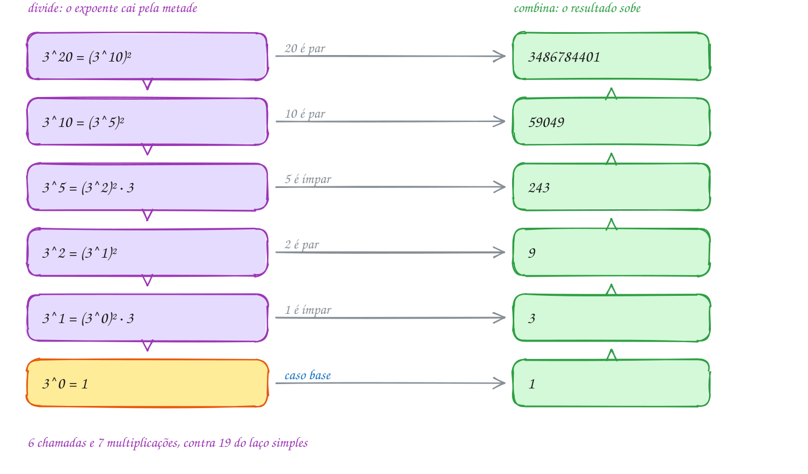
#include <stdio.h>
static int mult = 0; // quantas multiplicações foram feitas
// x elevado a n, dividindo o expoente ao meio
long long potencia(long long x, int n) {
if (n == 0) {
return 1; // caso base: x^0 = 1
}
long long metade = potencia(x, n / 2); // conquista: resolve o pedaço menor
long long r;
if (n % 2 == 0) {
r = metade * metade; // combina: x^n = (x^(n/2))^2
mult += 1;
} else {
r = metade * metade * x; // n ímpar: sobra um x
mult += 2;
}
printf("3^%-2d = %lld\n", n, r);
return r;
}
int main(void) {
long long total = potencia(3, 20);
printf("Na rodada 20: %lld mensagens\n", total);
printf("%d multiplicações (o laço simples faria 19)\n", mult);
return 0;
}
// Saída:
// 3^1 = 3
// 3^2 = 9
// 3^5 = 243
// 3^10 = 59049
// 3^20 = 3486784401
// Na rodada 20: 3486784401 mensagens
// 7 multiplicações (o laço simples faria 19)
Os resultados saem de baixo para cima, pela pilha de chamadas (0031). Cuidado
com o estouro: 3³⁹ cabe num long long, 3⁴⁰ não. O fluxograma segue a chamada
com n = 20:
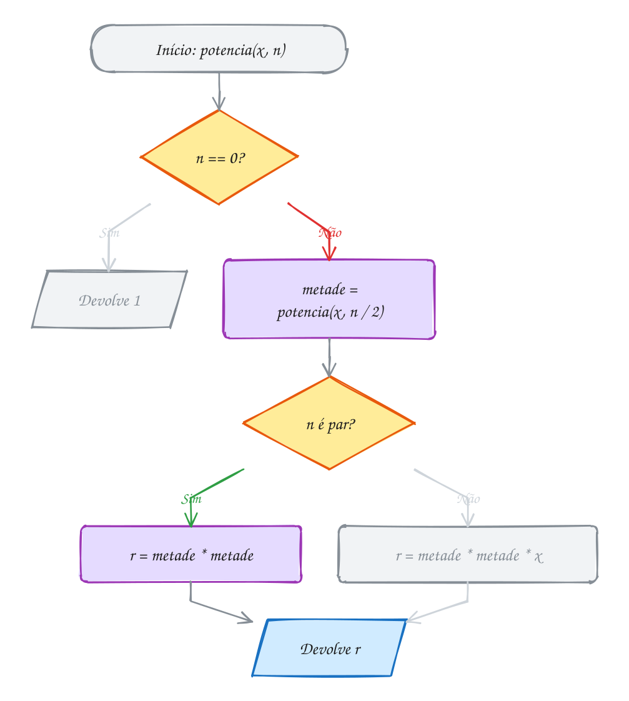
Exemplo A261 · Potência rápida sem recursão: os bits do expoente
#include <stdio.h>
// base^exp % m sem recursão: lê o expoente bit a bit, do menos significativo
// para o mais significativo. A cada volta, "base" vira o quadrado dela
// (b, b^2, b^4, b^8...) e entra no resultado quando o bit vale 1.
long long potencia_mod(long long base, long long exp, long long m) {
long long r = 1;
base %= m;
printf("bit base resultado\n");
while (exp > 0) {
int bit = exp & 1;
if (bit) {
r = r * base % m; // este pedaço do expoente entra na conta
}
printf("%3d %4lld %9lld\n", bit, base, r);
base = base * base % m; // próxima potência: o quadrado da atual
exp >>= 1; // anda um bit para a esquerda
}
return r;
}
int main(void) {
const char *dias[] = {"domingo", "segunda", "terça", "quarta",
"quinta", "sexta", "sábado"};
// hoje é domingo: que dia da semana será daqui a 2^100 dias?
// 100 em binário é 1100100: 7 bits, 7 voltas
long long resto = potencia_mod(2, 100, 7);
printf("2^100 dias: %lld dia(s) além de semanas inteiras -> %s\n\n",
resto, dias[resto]);
// os 4 últimos dígitos de 2^64, que não cabe nem num unsigned long long
// (o maior é 2^64 - 1); com % 10000, nenhuma conta passa de 10^8
long long fim = potencia_mod(2, 64, 10000);
printf("2^64 termina em %04lld\n", fim);
return 0;
}
// Saída:
// bit base resultado
// 0 2 1
// 0 4 1
// 1 2 2
// 0 4 2
// 0 2 2
// 1 4 1
// 1 2 2
// 2^100 dias: 2 dia(s) além de semanas inteiras -> terça
//
// bit base resultado
// 0 2 1
// 0 4 1
// 0 16 1
// 0 256 1
// 0 5536 1
// 0 7296 1
// 1 1616 1616
// 2^64 termina em 1616
gcc ~/LPEDC/material/A261.c -o ~/LPEDC/material/A261 && ~/LPEDC/material/A261
Exemplo A262 · Maior e menor de uma vez, dividindo ao meio
#include <stdio.h>
static int comparacoes = 0;
typedef struct {
int menor;
int maior;
} Extremos;
// menor e maior de v[ini..fim] (intervalo fechado)
Extremos extremos(const int v[], int ini, int fim) {
Extremos e;
if (ini == fim) { // 1 elemento: é o menor e o maior
e.menor = e.maior = v[ini];
return e;
}
if (fim == ini + 1) { // 2 elementos: 1 comparação basta
comparacoes++;
if (v[ini] < v[fim]) {
e.menor = v[ini];
e.maior = v[fim];
} else {
e.menor = v[fim];
e.maior = v[ini];
}
return e;
}
int meio = ini + (fim - ini) / 2;
Extremos a = extremos(v, ini, meio); // metade esquerda
Extremos b = extremos(v, meio + 1, fim); // metade direita
comparacoes += 2; // combina: 2 comparações
e.menor = a.menor < b.menor ? a.menor : b.menor;
e.maior = a.maior > b.maior ? a.maior : b.maior;
return e;
}
int main(void) {
// temperaturas mínimas de 16 dias em Curitiba, em graus
int temp[] = {12, 9, 15, 7, 11, 14, 6, 10, 13, 8, 16, 5, 9, 12, 17, 10};
int n = 16;
// jeito simples: cada elemento compara com o menor E com o maior
int menor = temp[0], maior = temp[0], simples = 0;
for (int i = 1; i < n; i++) {
simples += 2;
if (temp[i] < menor) menor = temp[i];
if (temp[i] > maior) maior = temp[i];
}
printf("Laço simples: menor %d, maior %d, %d comparações\n", menor, maior, simples);
// dividindo: cada par custa 1 comparação (e não 2), e cada combinação
// custa 2. Total: 3n/2 - 2 = 22, contra 2(n - 1) = 30. O Big-O é o mesmo,
// O(n); a divisão e conquista ganhou na constante.
Extremos e = extremos(temp, 0, n - 1);
printf("Dividindo: menor %d, maior %d, %d comparações\n", e.menor, e.maior, comparacoes);
return 0;
}
// Saída:
// Laço simples: menor 5, maior 17, 30 comparações
// Dividindo: menor 5, maior 17, 22 comparações
gcc ~/LPEDC/material/A262.c -o ~/LPEDC/material/A262 && ~/LPEDC/material/A262
Exercício E781 · ★☆☆
A barraca de pastel anotou as vendas de 8 dias, em reais:
320 415 280 510 390 605 720 460
Escreva a função int soma(const int v[], int ini, int fim), que soma v[ini..fim] por divisão e conquista: se o pedaço tem um elemento só, a soma é ele; senão, divida ao meio, some cada metade com a própria função e junte as duas respostas. Conte as chamadas numa variável global e mostre:
Saída esperada:
Total: R$ 3700
Chamadas: 15
Exercício E783 · ★★☆
Escreva long long potencia(long long x, int n), a potência por divisão e conquista: caso base n == 0; senão, UMA só chamada recursiva para n / 2, guardada numa variável, e o resultado é o quadrado dela (vezes x, se n é ímpar). Conte as chamadas numa variável static e mostre 3^20 e o número de chamadas. Depois troque 20 por 39 e confira que as chamadas sobem só para 7. (Não vá além de 39: 3^40 estoura o long long.)
Saída esperada:
3^20 = 3486784401
Chamadas: 6
Exercício E784 · ★★☆
Uma trilha de 10 km foi medida a cada quilômetro. A altitude só sobe até o pico e depois só desce (o pico não fica nas pontas):
km: 0 1 2 3 4 5 6 7 8 9 10
altitude: 820 905 1010 1180 1340 1415 1390 1250 1100 960 870
Escreva int pico(const int v[], int ini, int fim), que acha o índice do ponto mais alto SEM olhar todos os pontos. Divisão e conquista com um pedaço só, como a busca binária: olhe o meio e o vizinho da direita. Se ainda está subindo, o pico está à direita do meio; senão, está no meio ou à esquerda. Conte numa variável global quantas vezes comparou v[meio] com v[meio + 1].
Saída esperada:
Pico: 1415 m no km 5
Comparações: 3
Exercício E785 · ★★★
Fibonacci rápido: a matriz {1 1; 1 0} elevada a n tem F(n) na primeira linha, segunda coluna (F(1) = F(2) = 1). Calcule-o com a potência rápida, multiplicando matrizes. Escreva:
Saída esperada:
F(10) = 55 (6 produtos de matriz)
F(50) = 12586269025 (9 produtos de matriz)
F(90) = 2880067194370816120 (11 produtos de matriz)
Você e o Caio montaram o top 8 de séries do ano. Os gostos batem? Se você põe "Sintonia" antes de "Cidade Invisível" e o Caio faz o contrário, esse par de séries está em desacordo. Medir o quanto dois rankings discordam serve para recomendação de filmes, comparação de buscadores e votação.
Para transformar a pergunta em conta, escreva as suas séries em ordem e,
embaixo de cada uma, a posição que ela tem no ranking do Caio. Se ele
concordasse com tudo, o vetor sairia 1 2 3 4 5 6 7 8. Cada par fora de
ordem nesse vetor é uma inversão: um par de posições i < j com
v[i] > v[j] (CORMEN et al., 2024). O vetor ordenado tem zero inversões. O
vetor ao contrário tem todas: cada um dos n(n - 1)/2 pares está invertido.
O jeito direto é testar todos os pares com dois laços, o que custa O(n²). A divisão e conquista (0131) faz melhor. Divida o vetor ao meio. Toda inversão cai num de três tipos: os dois elementos estão inteiros na metade esquerda, os dois estão inteiros na metade direita, ou um está em cada metade e a inversão cruza o meio. A recursão conta os dois primeiros tipos sozinha, porque cada metade é o mesmo problema com metade do tamanho (KLEINBERG; TARDOS, 2006, cap. 5).
Falta contar as que cruzam, e aqui entra o truque. Se as duas metades já
estiverem ordenadas, a intercalação do merge sort (0094) conta de
graça. Na intercalação, i anda pela esquerda (que termina antes de q) e
j anda pela direita. Quando o menor da vez vem da direita, v[j] é menor
que v[i] e, como a esquerda está ordenada, menor também que todos os que
vêm depois dele. São q - i inversões de uma vez (KLEINBERG; TARDOS, 2006,
cap. 5). Intercalando 1 3 5 7 com 2 4 6 8, o 2 sai antes de 3, 5 e 7 e
soma 3; o 4 sai antes de 5 e 7 e soma 2; o 6 sai antes do 7 e soma 1.
Para isso funcionar, a função precisa devolver a contagem e deixar o pedaço ordenado, pronto para a intercalação do nível de cima. Ela é o merge sort com um contador, e o custo é o mesmo: O(n log n), contra O(n²) de testar todos os pares (KLEINBERG; TARDOS, 2006, cap. 5). Um efeito colateral: contar ordena o vetor. Se precisar da ordem original, conte numa cópia.
O número de inversões cresce rápido. Um vetor de 100 000 elementos ao
contrário tem 4 999 950 000 inversões, mais do que um int de 32 bits
guarda. O contador tem de ser long long (KERNIGHAN; RITCHIE, 1989).
A mesma divisão em três casos resolve outro problema clássico, o
subvetor de soma máxima: a faixa de posições seguidas cuja soma é a
maior possível. Um food truck anotou o lucro de 8 dias, 4 -6 3 5 -2 6 -9 2,
e quer saber qual sequência de dias rendeu mais. Divida ao meio. A melhor
faixa está inteira na esquerda (3 5, soma 8), inteira na direita (6,
soma 6) ou cruzando o meio. A que cruza é o melhor final da esquerda (3 5,
8) somado ao melhor começo da direita (-2 6, 4): 3 5 -2 6, soma 12. A
resposta é o maior dos três, 12. Achar a que cruza é um laço do meio para
fora, O(n), e o total fica O(n log n) (CORMEN et al., 2012, seção 4.1).
[!WARNING] A soma é
inv += q - i, e nãoinv++: ov[j]que sai está fora de ordem com todos dev[i]av[q - 1]. E o<=importa: valores iguais não são inversão.
Você e o Caio montaram o top 8 de séries. Embaixo de cada série sua vai a posição dela no ranking do Caio. São 3 inversões na esquerda, 4 na direita e 6 na intercalação:
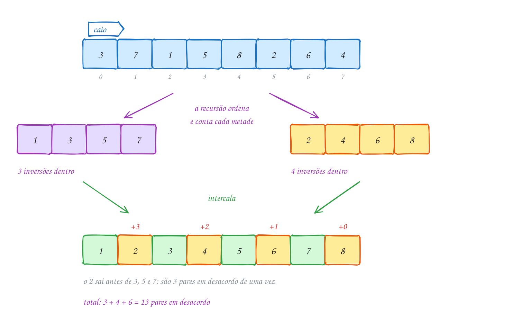
#include <stdio.h>
#include <stdlib.h>
// junta v[p..q-1] e v[q..r-1], já ordenados, e devolve quantas inversões
// cruzam as duas metades
long long intercala(int v[], int w[], int p, int q, int r) {
long long inv = 0;
int i = p, j = q, k = 0;
while (i < q && j < r) {
if (v[i] <= v[j]) {
w[k++] = v[i++];
} else {
inv += q - i; // v[j] é menor que TODOS os que sobram à esquerda
w[k++] = v[j++];
}
}
while (i < q) w[k++] = v[i++];
while (j < r) w[k++] = v[j++];
for (k = 0; k < r - p; k++) {
v[p + k] = w[k];
}
return inv;
}
// ordena v[p..r-1] e devolve o número de inversões que havia nele
long long conta(int v[], int w[], int p, int r) {
if (r - p < 2) {
return 0; // 0 ou 1 elemento: nenhuma inversão
}
int q = p + (r - p) / 2;
long long esq = conta(v, w, p, q); // inversões dentro da esquerda
long long dir = conta(v, w, q, r); // inversões dentro da direita
long long cruz = intercala(v, w, p, q, r); // um de cada lado
printf("[%d, %d): %lld + %lld + %lld\n", p, r, esq, dir, cruz);
return esq + dir + cruz;
}
int main(void) {
// posição, no ranking do Caio, de cada série do seu top 8
int caio[] = {3, 7, 1, 5, 8, 2, 6, 4};
int n = 8;
int *w = malloc(n * sizeof *w);
if (w == NULL) {
return 1;
}
long long total = conta(caio, w, 0, n);
printf("Pares em desacordo: %lld de %d\n", total, n * (n - 1) / 2);
free(w);
return 0;
}
// Saída:
// [0, 2): 0 + 0 + 0
// [2, 4): 0 + 0 + 0
// [0, 4): 0 + 0 + 3
// [4, 6): 0 + 0 + 1
// [6, 8): 0 + 0 + 1
// [4, 8): 1 + 1 + 2
// [0, 8): 3 + 4 + 6
// Pares em desacordo: 13 de 28
Contar também ordena; para manter a ordem original, conte numa cópia. As duas chamadas recursivas contam dentro de cada metade e a intercalação conta o que cruza:
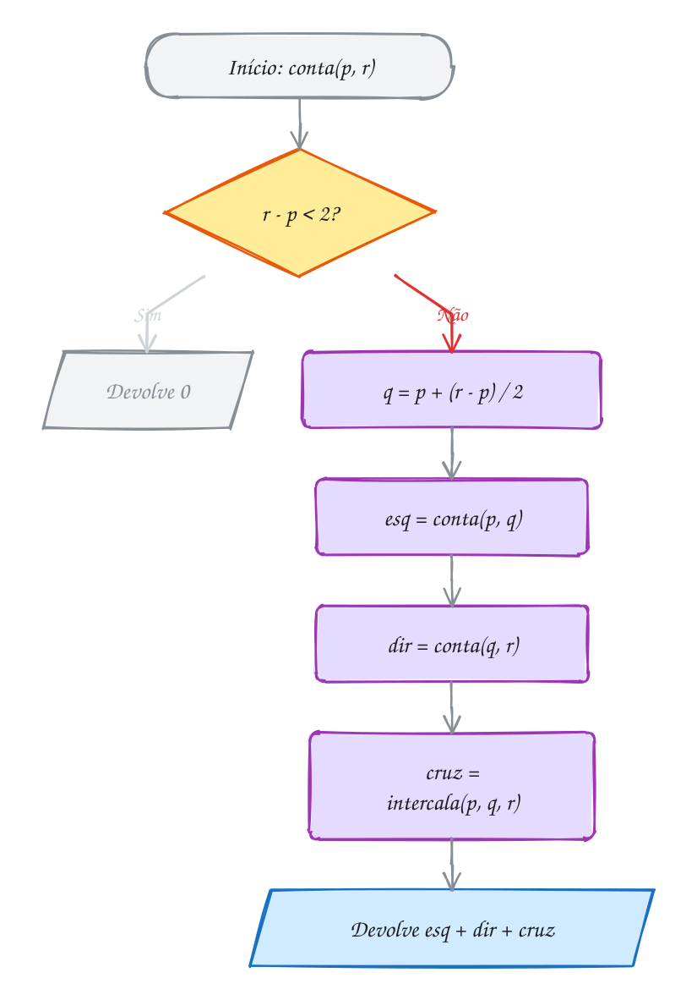
Última intercalação: 1 3 5 7 com 2 4 6 8. Quando o menor vem da direita,
soma os que sobram na esquerda:
| sai | de onde | sobram na esquerda | soma |
|---|---|---|---|
| 1 | esquerda | 0 | |
| 2 | direita | 3, 5, 7 | 3 |
| 3 | esquerda | 3 | |
| 4 | direita | 5, 7 | 5 |
| 5 | esquerda | 5 | |
| 6 | direita | 7 | 6 |
| 7 | esquerda | 6 | |
| 8 | direita | (nenhum) | 6 |
No subvetor de soma máxima, com o lucro de 8 dias 4 -6 3 5 -2 6 -9 2: a
esquerda dá 3 5 (8), a direita 6 (6) e o que cruza, 3 5 -2 6, dá 12,
do dia 2 ao 5. O A263 traz o algoritmo em C e o A264, um jeito em O(n).
Exemplo A263 · A melhor sequência de dias, dividindo ao meio
#include <stdio.h>
typedef struct {
int soma;
int ini, fim; // a faixa v[ini..fim]
} Faixa;
// melhor faixa que CRUZA o meio: obrigatoriamente contém v[meio] e v[meio + 1]
Faixa cruzando(const int v[], int ini, int meio, int fim) {
Faixa f = {0, meio, meio + 1};
int soma = 0, melhor_esq = v[meio];
for (int i = meio; i >= ini; i--) { // do meio para a esquerda
soma += v[i];
if (soma >= melhor_esq) {
melhor_esq = soma;
f.ini = i;
}
}
soma = 0;
int melhor_dir = v[meio + 1];
for (int j = meio + 1; j <= fim; j++) { // do meio para a direita
soma += v[j];
if (soma > melhor_dir) {
melhor_dir = soma;
f.fim = j;
}
}
f.soma = melhor_esq + melhor_dir;
return f;
}
// melhor faixa de v[ini..fim]
Faixa melhor(const int v[], int ini, int fim) {
if (ini == fim) {
return (Faixa){v[ini], ini, fim}; // um dia só
}
int meio = ini + (fim - ini) / 2;
Faixa e = melhor(v, ini, meio); // inteira na esquerda
Faixa d = melhor(v, meio + 1, fim); // inteira na direita
Faixa c = cruzando(v, ini, meio, fim); // cruzando o meio
if (e.soma >= d.soma && e.soma >= c.soma) return e;
if (d.soma >= c.soma) return d;
return c;
}
int main(void) {
// lucro de uma barraca de praia em 10 dias (R$); chuva dá prejuízo
int lucro[] = {120, -80, 200, -50, -90, 300, 150, -400, 180, 60};
int n = 10;
Faixa f = melhor(lucro, 0, n - 1);
printf("Melhor sequência: dia %d ao dia %d\n", f.ini, f.fim);
printf("Dias:");
for (int i = f.ini; i <= f.fim; i++) {
printf(" %d", lucro[i]);
}
printf("\nLucro somado: R$ %d\n", f.soma);
// repare: a melhor faixa engole dois dias de prejuízo (-50 e -90) para
// juntar os dias bons dos dois lados
return 0;
}
// Saída:
// Melhor sequência: dia 0 ao dia 6
// Dias: 120 -80 200 -50 -90 300 150
// Lucro somado: R$ 550
gcc ~/LPEDC/material/A263.c -o ~/LPEDC/material/A263 && ~/LPEDC/material/A263
Exemplo A264 · Kadane: a soma máxima numa passada só
#include <stdio.h>
// a melhor faixa que TERMINA no dia i ou é o próprio dia i (começar de novo)
// ou é a melhor que terminava no dia i - 1 com o dia i grudado no fim.
// Guardando só esse número, uma passada resolve: O(n), sem recursão.
void kadane(const char *rotulo, const int v[], int n) {
int aqui = v[0], ini_aqui = 0; // melhor faixa que termina em i
int melhor = v[0], ini = 0, fim = 0; // melhor faixa vista até agora
for (int i = 1; i < n; i++) {
if (aqui + v[i] < v[i]) {
aqui = v[i]; // o passado só atrapalha: recomeça
ini_aqui = i;
} else {
aqui += v[i]; // vale a pena continuar
}
if (aqui > melhor) {
melhor = aqui;
ini = ini_aqui;
fim = i;
}
}
printf("%-10s rodadas %d a %d, saldo %+d\n", rotulo, ini + 1, fim + 1, melhor);
}
int main(void) {
// saldo de gols de dois times, rodada a rodada
int tigre[] = {2, -1, -3, 4, -1, 2, 1, -5, 4, 1};
int lanterna[] = {-2, -1, -4, -1, -3}; // perdeu todas
kadane("Tigre:", tigre, 10);
kadane("Lanterna:", lanterna, 5);
// com tudo negativo, a melhor faixa é a menos ruim: um jogo só (-1).
// Começar "aqui" e "melhor" com 0 em vez de v[0] daria saldo 0 numa faixa
// vazia, o que não é uma sequência de rodadas.
return 0;
}
// Saída:
// Tigre: rodadas 4 a 7, saldo +6
// Lanterna: rodadas 2 a 2, saldo -1
gcc ~/LPEDC/material/A264.c -o ~/LPEDC/material/A264 && ~/LPEDC/material/A264
Exercício E787 · ★☆☆
A lista de entregas de um motoboy deveria estar em ordem de horário, mas foi montada às pressas. Os horários (minutos depois das 18h), na ordem da lista, são:
14 9 17 12 20 11 15
Escreva o jeito direto, O(n²): dois laços que testam todos os pares i < j e mostram cada par fora de ordem (horario[i] > horario[j]), na ordem em que os laços os encontram. No fim, mostre o total e quantos pares existem.
Saída esperada:
Fora de ordem: (14, 9) (14, 12) (14, 11) (17, 12) (17, 11) (17, 15) (12, 11) (20, 11) (20, 15)
Inversões: 9 de 21 pares
Exercício E789 · ★★☆
Você e a Bia ranquearam os mesmos seis pratos, do favorito ao último:
você: Feijoada, Moqueca, Coxinha, Acarajé, Pastel, Pão de queijo
Bia: Moqueca, Coxinha, Feijoada, Pão de queijo, Acarajé, Pastel
Mostre cada par de pratos em que vocês discordam (no formato "A x B", com A antes de B no SEU ranking) e o total. Monte um vetor v em que v[i] é a posição, no ranking da Bia, do seu i-ésimo prato. Os pares em desacordo são exatamente as inversões de v.
Saída esperada:
Feijoada x Moqueca
Feijoada x Coxinha
Acarajé x Pão de queijo
Pastel x Pão de queijo
Pares em desacordo: 4 de 15
Exercício E790 · ★★☆
Cada deslocamento do insertion sort (assunto 0093) desfaz uma inversão, então o número de deslocamentos é o número de inversões do vetor. Confira no computador. Escreva long long insercao(int v[], int n), que devolve quantos deslocamentos fez, e o merge sort que conta inversões, do texto (sem os printf). Aplique os dois, cada um numa cópia do vetor (memcpy), aos pesos de 12 encomendas, em kg:
31 12 45 27 8 39 19 50 4 23 36 15
Saída esperada:
Deslocamentos do insertion sort: 36
Inversões pelo merge sort: 36
Exercício E791 · ★★★
Um analista quer contar as quedas fortes no preço de uma ação: pares de dias i < j em que o preço do dia i era MAIS QUE O DOBRO do preço do dia j (preco[i] > 2 * preco[j]). Os preços de 8 dias, em reais:
40 18 25 9 30 12 50 20
Escreva a versão O(n log n), adaptando o merge sort que conta inversões, e confira com uma força bruta O(n²) feita ANTES de ordenar.
Saída esperada:
Quedas de mais da metade: 7
Força bruta: 7
Na padaria, o pão deu R$ 3,10 e você pagou com uma nota de 5. O caixa precisa devolver R$ 1,90 com o menor número de moedas. Ninguém no balcão testa todas as combinações. O caixa pega a maior moeda que cabe no que falta, depois a maior que cabe no resto, e assim por diante: 100, 50, 25, 10 e 5 centavos. Cinco moedas, e é o mínimo possível.
Esse jeito de decidir tem nome. Um algoritmo guloso (greedy) monta a solução passo a passo e, a cada passo, faz a escolha que parece a melhor agora, sem nunca voltar atrás (CORMEN et al., 2024, cap. 15). Ele não desfaz escolhas, como o backtracking (0127), e não divide o problema em pedaços para resolver cada um, como a divisão e conquista (0131). Você já viu um guloso: o Dijkstra (0112) fixa o vértice mais perto da origem e nunca mais mexe nele (ZIVIANI, 2010, cap. 2).
Quando funciona, o guloso é curto e barato. O troco é um laço que percorre
os k tipos de moeda do maior para o menor, e o custo é O(k + moedas
dadas). O problema é que uma escolha boa agora pode estragar o resto, e o
guloso não percebe, porque nunca olha para trás.
Veja isso num fliperama com fichas de 1, 3 e 4 créditos. O troco de 6 créditos pelo guloso começa pela maior ficha que cabe, a de 4. Sobram 2, que só se pagam com 1 + 1. São três fichas. Mas 3 + 3 resolve com duas. O 4 parecia a melhor escolha e fechou o caminho bom. O sistema do Real é canônico: para ele, o guloso sempre acha o mínimo. O sistema {1, 3, 4} não é (KOZEN; ZAKS, 1994).
Como saber se o guloso acerta? O Cormen pede duas propriedades. A propriedade da escolha gulosa diz que existe alguma solução ótima que começa pela escolha que o guloso faz. Então escolher assim não fecha a porta para o ótimo (CORMEN et al., 2024, cap. 15). A subestrutura ótima diz que, depois da escolha, o que sobra é um problema do mesmo tipo, menor, e que a solução ótima do todo contém uma solução ótima desse resto (CORMEN et al., 2024, cap. 15). No troco: depois de dar a moeda de 100, falta dar R$ 0,90 com o mínimo de moedas, que é o mesmo problema.
A primeira propriedade costuma sair de uma prova por troca. Você pega uma solução ótima qualquer, troca um pedaço dela pela escolha gulosa e mostra que o resultado não piora (KLEINBERG; TARDOS, 2006, cap. 4). No Real, se um troco usasse duas moedas de 25 no lugar de uma de 50, trocar as duas pela de 50 diminuiria a contagem. Logo o ótimo nunca evita a moeda maior que cabe. Com {1, 3, 4} a troca falha: duas fichas de 3 não viram uma de 4.
A lição vale para todo guloso: um contraexemplo derruba, e só uma prova garante (KLEINBERG; TARDOS, 2006, cap. 4). Testar meia dúzia de casos que dão certo não prova nada. Quando o guloso não serve, a programação dinâmica (módulo 21) resolve o troco de qualquer sistema de moedas, a um custo maior (CORMEN et al., 2024, cap. 15).
[!WARNING] O troco guloso depende da ordem do vetor: com
{5, 10, 25, 50, 100}, a função dá 38 moedas de 5 centavos para R$ 1,90. E use centavos emint: emdouble,1.90 - 1.00 - 0.50 - 0.25 - 0.10não dá 0,05 exato.
O troco de R$ 1,90 na padaria (o guloso acerta) e o de 6 créditos no fliperama com fichas de 1, 3 e 4 (o 4 deixa um resto de 2, e o 3 + 3 nunca é visto):
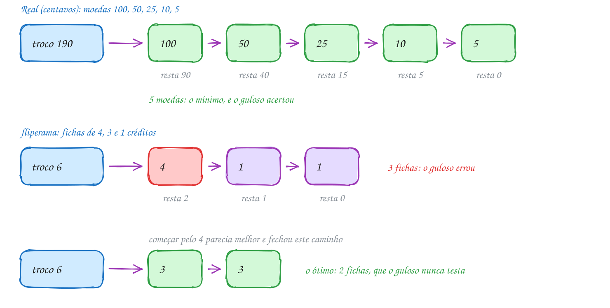
#include <stdio.h>
// troco guloso: sempre a MAIOR moeda que ainda cabe no que falta.
// moedas[] precisa estar em ordem decrescente. Devolve quantas moedas deu.
int troco_guloso(const int moedas[], int k, int valor) {
int quantas = 0;
int i = 0;
printf("Troco de %d:", valor);
while (valor > 0 && i < k) {
if (moedas[i] <= valor) {
printf(" %d", moedas[i]); // escolhe e nunca volta atrás
valor -= moedas[i];
quantas++;
} else {
i++; // essa não cabe mais: tenta a próxima
}
}
printf(" (%d moedas)\n", quantas);
return quantas;
}
int main(void) {
int real[] = {100, 50, 25, 10, 5}; // centavos
int fichas[] = {4, 3, 1}; // créditos do fliperama
troco_guloso(real, 5, 190); // R$ 1,90
troco_guloso(fichas, 3, 6); // 6 créditos
return 0;
}
// Saída:
// Troco de 190: 100 50 25 10 5 (5 moedas)
// Troco de 6: 4 1 1 (3 moedas)
O código não sabe que errou: só o contraexemplo mostra que 3 não é o mínimo. No fluxograma não há volta a uma moeda maior:
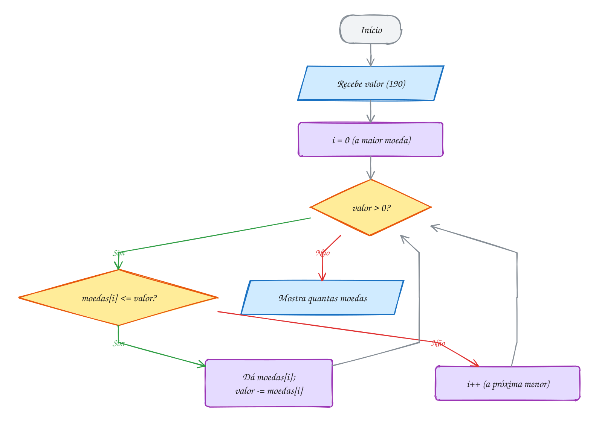
Exemplo A265 · Postos na estrada: parar o mínimo de vezes
#include <stdio.h>
// guloso que ACERTA: siga até onde o tanque deixa e só abasteça no último
// posto antes de o combustível acabar. Parar antes nunca ajuda: o tanque
// cheio num posto mais à frente leva você pelo menos tão longe.
int main(void) {
int destino = 600; // km da viagem
int autonomia = 200; // km com o tanque cheio
int posto[] = {80, 150, 230, 310, 360, 450, 520, 590}; // km de cada posto
int n = 8;
int alcance = autonomia; // até onde chego sem parar
int paradas = 0;
int i = 0;
while (alcance < destino) {
int ultimo = -1;
while (i < n && posto[i] <= alcance) {
ultimo = posto[i]; // o posto mais distante que ainda alcanço
i++;
}
if (ultimo < 0) {
printf("Sem posto ao alcance: a viagem não dá\n");
return 1;
}
paradas++;
alcance = ultimo + autonomia;
printf("Parada %d: km %d (agora chego ao km %d)\n", paradas, ultimo, alcance);
}
printf("Chegou ao km %d com %d paradas\n", destino, paradas);
return 0;
}
// Saída:
// Parada 1: km 150 (agora chego ao km 350)
// Parada 2: km 310 (agora chego ao km 510)
// Parada 3: km 450 (agora chego ao km 650)
// Chegou ao km 600 com 3 paradas
gcc ~/LPEDC/material/A265.c -o ~/LPEDC/material/A265 && ~/LPEDC/material/A265
Exemplo A266 · Fila do cartório: o mais rápido primeiro
#include <stdio.h>
#include <stdlib.h>
typedef struct {
const char *nome;
int minutos; // tempo de atendimento
} Pessoa;
int por_duracao(const void *a, const void *b) {
const Pessoa *x = a;
const Pessoa *y = b;
return (x->minutos > y->minutos) - (x->minutos < y->minutos);
}
// soma o tempo que cada pessoa ESPERA antes de ser atendida
int espera_total(const Pessoa fila[], int n) {
int relogio = 0, total = 0;
for (int i = 0; i < n; i++) {
total += relogio; // a pessoa i esperou até agora
relogio += fila[i].minutos;
printf(" %s", fila[i].nome);
}
return total;
}
int main(void) {
Pessoa fila[] = {{"Ana", 12}, {"Bruno", 3}, {"Carla", 8}, {"Davi", 1}, {"Eva", 5}};
int n = 5;
printf("Por chegada:");
int chegada = espera_total(fila, n);
printf("\n espera total %d min, média %.1f min\n", chegada, chegada / (double)n);
// guloso: atender sempre o serviço mais curto que está na fila.
// Quem é atendido primeiro faz TODOS os outros esperarem; por isso o
// primeiro deve ser o mais curto.
qsort(fila, n, sizeof fila[0], por_duracao);
printf("Mais curto primeiro:");
int curto = espera_total(fila, n);
printf("\n espera total %d min, média %.1f min\n", curto, curto / (double)n);
return 0;
}
// Saída:
// Por chegada: Ana Bruno Carla Davi Eva
// espera total 74 min, média 14.8 min
// Mais curto primeiro: Davi Bruno Eva Carla Ana
// espera total 31 min, média 6.2 min
gcc ~/LPEDC/material/A266.c -o ~/LPEDC/material/A266 && ~/LPEDC/material/A266
Exercício E793 · ★☆☆
O caixa eletrônico tem notas de R$ 200, 100, 50, 20, 10, 5 e 2, e entrega o saque com o menor número de notas, pelo guloso: a maior nota que cabe, de novo e de novo. Escreva a função void saque(int valor), que mostra quantas notas de cada valor saem (só as que aparecem) e o total, e chame para R$ 380 e R$ 1270.
Saída esperada:
Saque de R$ 380:
1 de R$ 200
1 de R$ 100
1 de R$ 50
1 de R$ 20
1 de R$ 10
total: 5 notas
Saque de R$ 1270:
6 de R$ 200
1 de R$ 50
1 de R$ 20
total: 8 notas
Exercício E795 · ★★☆
Numa enchente, cada barco de resgate leva no máximo 2 pessoas e no máximo 150 kg. Os pesos das 8 pessoas a resgatar, em kg:
60 95 80 120 45 70 100 55
Use o menor número de barcos com este guloso: ordene os pesos; a pessoa mais pesada que falta SEMPRE vai no próximo barco; se a mais leve que falta couber junto, vai junto. Mostre cada barco (o mais pesado primeiro) e o total.
Saída esperada:
Barco 1: 120
Barco 2: 100 + 45
Barco 3: 95 + 55
Barco 4: 80 + 60
Barco 5: 70
Total: 5 barcos
Exercício E796 · ★★☆
O sistema da lanchonete lê as moedas de um arquivo de configuração, e elas chegam fora de ordem: {10, 50, 5, 100, 25}. Escreva int troco_guloso(const int moedas[], int k, int valor), que supõe as moedas em ordem DECRESCENTE: mostra as moedas usadas, uma a uma (a maior que cabe, de novo e de novo), e devolve quantas foram. No main, ordene as moedas em ordem decrescente com qsort (escreva a função de comparação) e calcule o troco de 190 e de 65.
Saída esperada:
Troco de 190: 100 50 25 10 5 (5 moedas)
Troco de 65: 50 10 5 (3 moedas)
Exercício E798 · ★★★
Depois do churrasco, a conta foi dividida igualmente entre 6 amigos, mas cada um pagou uma parte diferente no mercado:
Ana R$ 180, Bruno R$ 0, Carla R$ 60, Davi R$ 120, Eva R$ 0, Fábio R$ 90
Monte os Pix para acertar as contas com este guloso: enquanto alguém deve, quem MAIS deve paga para quem MAIS tem a receber o menor dos dois valores (a dívida de um ou o crédito do outro). Em caso de empate, vale o que vem primeiro na lista. Trabalhe em centavos, num int.
Saída esperada:
Total R$ 450.00, cada um R$ 75.00
Bruno -> Ana: R$ 75.00
Eva -> Davi: R$ 45.00
Eva -> Ana: R$ 30.00
Carla -> Fábio: R$ 15.00
4 Pix
A quadra do condomínio atende uma reserva por vez, e no sábado chegaram nove pedidos, cada um com hora de início e de fim. Alguns horários se chocam. O síndico quer aceitar o maior número possível de pedidos, sem dois na quadra ao mesmo tempo. Quais ele aceita?
Esse é um problema clássico de escalonamento. Na seleção de atividades,
você recebe um conjunto de intervalos [início, fim) e quer o maior
subconjunto deles sem sobreposição (CORMEN et al., 2024, cap. 15). O mesmo
problema aparece com salas de reunião, com uma máquina que roda uma tarefa
por vez e com a grade de um canal de TV.
Testar todos os subconjuntos (0125) resolve, mas custa O(2ⁿ): são 512 casos para nove pedidos e mais de um bilhão para trinta. Um guloso (0133) ordena os pedidos uma vez e decide cada um numa passada. A dúvida é o critério. Aceitar primeiro quem começa mais cedo parece justo. Aceitar primeiro o pedido mais curto parece econômico. Aceitar primeiro quem termina mais cedo parece estranho, e é o único que funciona sempre.
O motivo é simples de ver. O pedido que termina primeiro devolve a quadra mais cedo e deixa o maior pedaço do dia livre para os outros (CORMEN et al., 2024, cap. 15). Quem começa cedo pode ocupar a quadra o dia inteiro. Um pedido curto pode cair bem no meio de dois outros que cabiam juntos.
A prova é uma troca, como no troco (0133). Pegue uma escolha ótima qualquer e olhe o primeiro pedido dela. Troque-o pelo pedido que termina mais cedo de todos. Esse termina antes ou junto, então não choca com nenhum dos seguintes, e a escolha continua com o mesmo tamanho. Logo existe uma solução ótima que começa pela escolha gulosa. Kleinberg e Tardos chamam esse raciocínio de "ficar à frente": a cada passo, o guloso termina no máximo na mesma hora que qualquer outra solução (KLEINBERG; TARDOS, 2006, cap. 4).
O algoritmo, que o Cormen chama de GREEDY-ACTIVITY-SELECTOR, tem três
partes. Primeiro, ordene os pedidos pela hora de fim. Depois, guarde numa
variável livre_em a hora em que a quadra fica livre, começando em 0. Por
fim, percorra os pedidos em ordem: se o pedido começa em livre_em ou
depois, aceite e mova livre_em para o fim dele; senão, recuse (CORMEN et
al., 2024, cap. 15).
O custo é dominado pela ordenação, O(n log n). A passada que decide é O(n), porque olha cada pedido uma vez. Comparado com O(2ⁿ) de testar todos os subconjuntos, a diferença é enorme já para poucas dezenas de pedidos (CORMEN et al., 2024, cap. 15).
Um detalhe na comparação. Os intervalos são semiabertos: [8, 10)
inclui as 8h e não inclui as 10h. Quem sai às 10h libera a quadra às 10h, e
quem entra às 10h pode usá-la. Por isso o teste é ini >= livre_em, com o
igual (CORMEN et al., 2024, cap. 15). Com >, a reserva das 10h às 11h
seria recusada sem motivo.
[!WARNING] Os outros critérios falham sem erro, só com resposta pior. "Começa primeiro" pega um pedido longo que bloqueia o dia; "mais curto primeiro" pode pegar um que choca com dois outros que cabiam juntos.
Nove pedidos de reserva da quadra do condomínio no sábado. No desenho, verdes foram aceitos e cinzas chocaram com alguém aceito. O pedido da Iara (7h às 17h) seria o primeiro pelo critério "começa antes":
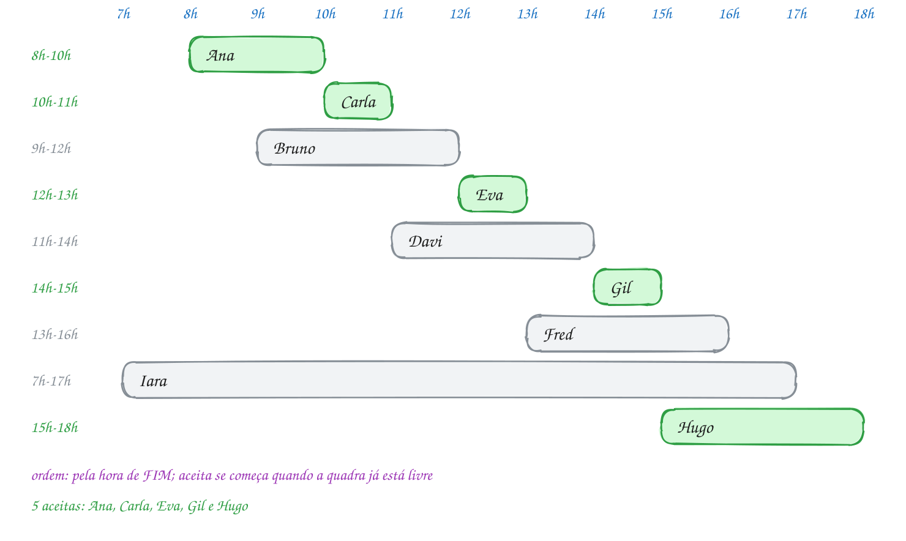
Os pedidos são structs, ordenados com qsort (0096) pelo fim. A comparação
usa (x > y) - (x < y), que não estoura como a subtração:
#include <stdio.h>
#include <stdlib.h>
typedef struct {
const char *nome;
int ini, fim; // horário [ini, fim): quem sai às 10h libera a quadra às 10h
} Reserva;
int por_fim(const void *a, const void *b) {
const Reserva *x = a;
const Reserva *y = b;
return (x->fim > y->fim) - (x->fim < y->fim);
}
int main(void) {
Reserva r[] = {
{"Ana", 8, 10}, {"Bruno", 9, 12}, {"Carla", 10, 11},
{"Davi", 11, 14}, {"Eva", 12, 13}, {"Fred", 13, 16},
{"Gil", 14, 15}, {"Hugo", 15, 18}, {"Iara", 7, 17},
};
int n = 9;
// guloso: entre os pedidos que cabem, aceite o que TERMINA primeiro
qsort(r, n, sizeof r[0], por_fim);
int livre_em = 0; // a quadra fica livre a partir desta hora
int aceitas = 0;
for (int i = 0; i < n; i++) {
printf("%-6s %2dh-%2dh: ", r[i].nome, r[i].ini, r[i].fim);
if (r[i].ini >= livre_em) {
printf("aceita\n");
livre_em = r[i].fim;
aceitas++;
} else {
printf("recusada (quadra ocupada até %dh)\n", livre_em);
}
}
printf("Reservas aceitas: %d de %d\n", aceitas, n);
return 0;
}
// Saída:
// Ana 8h-10h: aceita
// Carla 10h-11h: aceita
// Bruno 9h-12h: recusada (quadra ocupada até 11h)
// Eva 12h-13h: aceita
// Davi 11h-14h: recusada (quadra ocupada até 13h)
// Gil 14h-15h: aceita
// Fred 13h-16h: recusada (quadra ocupada até 15h)
// Iara 7h-17h: recusada (quadra ocupada até 15h)
// Hugo 15h-18h: aceita
// Reservas aceitas: 5 de 9
"Começa primeiro" aceitaria a Iara e depois só o Hugo: 1 pedido em vez de 5. Depois da ordenação, o laço tem uma pergunta só; o caminho marcado mostra a Ana aceita e o Bruno recusado:
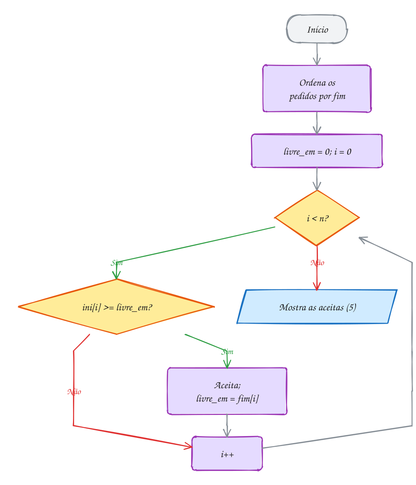
Exemplo A267 · Quantas salas? Todas as aulas, o mínimo de salas
#include <stdio.h>
#include <stdlib.h>
#define MAX_SALAS 10
typedef struct {
const char *materia;
int ini, fim; // [ini, fim), em horas
} Aula;
int por_inicio(const void *a, const void *b) {
const Aula *x = a;
const Aula *y = b;
if (x->ini != y->ini) {
return (x->ini > y->ini) - (x->ini < y->ini);
}
return (x->fim > y->fim) - (x->fim < y->fim); // empate: a que acaba antes
}
// outro problema de intervalos: agora TODAS as aulas acontecem, e a pergunta
// é quantas salas são precisas. Guloso: pela hora de INÍCIO, cada aula vai
// para uma sala que já ficou livre; se nenhuma ficou, abre uma sala nova.
int main(void) {
Aula a[] = {
{"Química", 10, 12}, {"Português", 8, 10}, {"Física", 9, 11},
{"História", 11, 13}, {"Matemática", 8, 9}, {"Inglês", 12, 14},
{"Biologia", 9, 12}, {"Redação", 13, 15},
};
int n = 8;
int livre_em[MAX_SALAS]; // hora em que cada sala aberta fica livre
int salas = 0;
qsort(a, n, sizeof a[0], por_inicio);
for (int i = 0; i < n; i++) {
int s = 0;
while (s < salas && livre_em[s] > a[i].ini) {
s++; // esta sala ainda está ocupada
}
if (s == salas) {
salas++; // nenhuma livre: abre a próxima
}
livre_em[s] = a[i].fim;
printf("%2dh-%2dh sala %d %s\n", a[i].ini, a[i].fim, s + 1, a[i].materia);
}
printf("Salas necessárias: %d\n", salas);
// 3 é o mínimo: às 9h, Português, Física e Biologia acontecem juntas.
// O número de salas nunca passa do maior número de aulas simultâneas.
return 0;
}
// Saída:
// 8h- 9h sala 1 Matemática
// 8h-10h sala 2 Português
// 9h-11h sala 1 Física
// 9h-12h sala 3 Biologia
// 10h-12h sala 2 Química
// 11h-13h sala 1 História
// 12h-14h sala 2 Inglês
// 13h-15h sala 1 Redação
// Salas necessárias: 3
gcc ~/LPEDC/material/A267.c -o ~/LPEDC/material/A267 && ~/LPEDC/material/A267
Exemplo A268 · Juntando horários: a agenda livre do consultório
#include <stdio.h>
#include <stdlib.h>
typedef struct {
int ini, fim; // minutos desde a meia-noite, [ini, fim)
} Bloco;
int por_inicio(const void *a, const void *b) {
const Bloco *x = a;
const Bloco *y = b;
return (x->ini > y->ini) - (x->ini < y->ini);
}
void hora(int m) {
printf("%02d:%02d", m / 60, m % 60);
}
int main(void) {
// consultas marcadas por três atendentes, fora de ordem e encavaladas
Bloco c[] = {
{9 * 60, 10 * 60}, {14 * 60, 15 * 60 + 30}, {9 * 60 + 30, 11 * 60},
{16 * 60, 17 * 60}, {11 * 60, 11 * 60 + 45}, {15 * 60, 15 * 60 + 45},
{13 * 60, 13 * 60 + 30},
};
int n = 7;
// ordena pelo início e vai "engolindo" quem começa antes do fim atual
qsort(c, n, sizeof c[0], por_inicio);
Bloco junto[7];
int k = 0;
junto[0] = c[0];
for (int i = 1; i < n; i++) {
if (c[i].ini <= junto[k].fim) { // encosta ou sobrepõe: junta
if (c[i].fim > junto[k].fim) {
junto[k].fim = c[i].fim;
}
} else {
junto[++k] = c[i]; // buraco: começa outro bloco
}
}
k++;
printf("Ocupado:");
for (int i = 0; i < k; i++) {
printf(" ");
hora(junto[i].ini);
printf("-");
hora(junto[i].fim);
}
// o que sobra entre 08:00 e 18:00 é horário livre
printf("\nLivre: ");
int de = 8 * 60;
for (int i = 0; i <= k; i++) {
int ate = i < k ? junto[i].ini : 18 * 60;
if (ate > de) {
printf(" ");
hora(de);
printf("-");
hora(ate);
}
if (i < k) {
de = junto[i].fim;
}
}
printf("\n");
return 0;
}
// Saída:
// Ocupado: 09:00-11:45 13:00-13:30 14:00-15:45 16:00-17:00
// Livre: 08:00-09:00 11:45-13:00 13:30-14:00 15:45-16:00 17:00-18:00
gcc ~/LPEDC/material/A268.c -o ~/LPEDC/material/A268 && ~/LPEDC/material/A268
Exercício E799 · ★☆☆
A sala de reunião do escritório recebeu 8 pedidos para amanhã, já ORDENADOS pela hora de fim (o início está em ini[i], o fim em fim[i]):
8-9 8-10 9-11 10-12 11-12 12-14 13-15 14-16
Escreva o laço guloso que escolhe o maior número de reuniões sem choque: guarde a hora em que a sala fica livre (começa em 0) e aceite cada pedido que começa nessa hora ou depois. Os intervalos são [ini, fim): quem termina às 9h libera a sala às 9h.
Saída esperada:
Escolhidas: 8-9 9-11 11-12 12-14 14-16
Total: 5
Exercício E801 · ★★☆
Coloque os três critérios do texto para competir no mesmo conjunto de pedidos, [ini, fim):
[0, 10) [1, 4) [4, 7) [7, 10) [3, 5) [6, 8) [10, 12)
Escreva int seleciona(const Pedido p[], int n, int (*criterio)(const void *, const void *)), que copia os pedidos (memcpy), ordena a cópia com qsort usando o critério recebido (ponteiro para função, assunto 0050) e aceita cada pedido que não choca com NENHUM dos já aceitos. Escreva também as três comparações: por_inicio, por_duracao e por_fim.
Saída esperada:
Começa primeiro: 2
Mais curto: 3
Termina primeiro: 4
Exercício E802 · ★★☆
A fiscal da vigilância sanitária precisa passar por todas as feiras de domingo. Ela anda rápido: numa visita, num certo horário, fiscaliza todas as feiras abertas naquela hora. Os horários são FECHADOS, [abre, fecha]:
Pinheiros 7-12, Lapa 6-9, Tatuapé 10-14, Mooca 8-11,
Liberdade 13-18, Butantã 15-17, Santana 16-20
Qual é o menor número de visitas? Guloso: ordene pela hora de fechamento; pegue a feira que fecha primeiro e ainda não foi vista e marque uma visita na hora em que ela FECHA (o mais tarde possível, para pegar o maior número de outras abertas). Mostre cada visita com as feiras abertas naquela hora, olhando só as que vêm dali em diante na ordem.
Saída esperada:
Visita às 9h: Lapa Mooca Pinheiros
Visita às 14h: Tatuapé Liberdade
Visita às 17h: Butantã Liberdade Santana
Total: 3 visitas
Exercício E804 · ★★★
O clube tem DUAS quadras iguais e recebeu 10 pedidos de jogos, [ini, fim):
Leões 8-10, Tubarões 8-11, Águias 9-12, Lobos 10-12, Falcões 11-13,
Panteras 12-14, Touros 10-15, Corujas 13-16, Raposas 14-16, Ursos 15-17
Aceite o maior número de jogos. O guloso do texto se estende assim: ordene pela hora de fim (em caso de empate, quem começa antes vem antes); para cada jogo, entre as quadras já livres na hora em que ele começa, escolha a que ficou livre MAIS TARDE; se nenhuma está livre, recuse.
Saída esperada:
8h-10h quadra 1 Leões
8h-11h quadra 2 Tubarões
9h-12h recusado Águias
10h-12h quadra 1 Lobos
11h-13h quadra 2 Falcões
12h-14h quadra 1 Panteras
10h-15h recusado Touros
13h-16h quadra 2 Corujas
14h-16h quadra 1 Raposas
15h-17h recusado Ursos
Jogos aceitos: 7 de 10
Um feirante leva 60 kg na caminhonete. Ele tem café, castanha, feijão, açafrão e arroz a granel, cada um num saco com peso e preço, e pode levar parte de um saco, porque grão se divide. O que ele põe na caçamba para voltar da feira com o máximo de dinheiro?
O problema tem nome. Na mochila fracionária, você tem uma mochila de
capacidade W e n itens, cada um com peso e valor, e pode levar qualquer
fração de cada item, recebendo o valor proporcional a essa fração. O
objetivo é o maior valor total sem passar de W (CORMEN et al., 2024, cap.
15). Metade de um saco de 30 kg que vale R$ 270 pesa 15 kg e vale R$ 135.
A intuição é pensar no espaço, não no item. Cada quilo da caçamba é um
recurso escasso, e ele deve ir para o produto que paga mais por quilo. Essa
medida é a razão valor / peso, o valor por unidade de espaço (CORMEN
et al., 2024, cap. 15). O açafrão pode custar menos por saco que o feijão e,
mesmo assim, render muito mais por quilo.
Daí sai o guloso (0133). Calcule a razão de cada item e ordene da maior para a menor. Percorra nessa ordem e leve cada item inteiro enquanto ele couber. No primeiro que não couber, leve só a fração que completa o espaço que sobrou, e pare (ZIVIANI, 2010, cap. 2). No feirante, as razões são açafrão R$ 80/kg, castanha R$ 50, café R$ 30, feijão R$ 9 e arroz R$ 5. Açafrão, castanha e café cabem inteiros (5 + 15 + 20 = 40 kg). Sobram 20 kg e o saco de feijão tem 30: vão dois terços dele. O arroz nem entra.
Repare que no máximo um item fica partido, o último. Todos antes dele entraram inteiros, e todos depois ficaram de fora. O custo é dominado pela ordenação, O(n log n); a passada que enche a caçamba é O(n) (CORMEN et al., 2024, cap. 15).
Por que essa ordem é a ótima? A prova é por troca. Suponha uma carga que leva 1 kg de feijão (R$ 9/kg) e deixa de fora 1 kg de castanha (R$ 50/kg). Trocar um pelo outro mantém o peso e ganha R$ 41. Então uma carga ótima nunca deixa de fora um quilo que paga mais enquanto leva um que paga menos, e é exatamente isso que a ordem pela razão garante (KLEINBERG; TARDOS, 2006, cap. 4).
Tudo isso depende de poder partir. Na mochila 0/1, cada item vai inteiro ou não vai, como um notebook ou uma televisão. Ali a troca de um quilo por outro deixa de ser possível, e o guloso pela razão pode errar. A mochila 0/1 se resolve com programação dinâmica (módulo 21), a um custo maior (CORMEN et al., 2024, cap. 15).
[!WARNING] Esse guloso só vale na versão fracionária. Com capacidade 10 e itens (6, R$ 30), (5, R$ 20) e (5, R$ 20) indivisíveis, ele leva o primeiro e faz R$ 30, mas os dois de 5 dão R$ 40.
Um feirante leva 60 kg na caminhonete. Por razão: açafrão R$ 80/kg, castanha R$ 50, café R$ 30, feijão R$ 9, arroz R$ 5. Os três primeiros cabem inteiros (40 kg); do feijão vão dois terços do saco; o arroz nem entra:
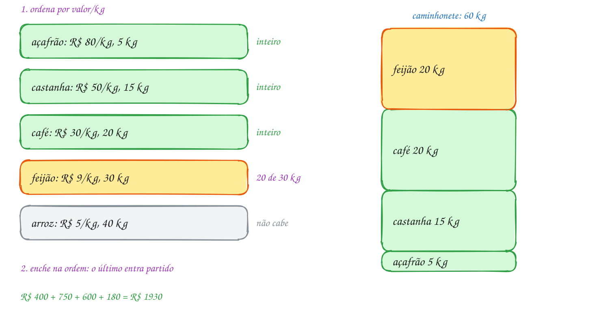
A comparação calcula a razão de cada lado e ordena do maior para o menor.
Nunca devolva (int)(ry - rx): razões 4,7 e 4,2 virariam 0.
#include <stdio.h>
#include <stdlib.h>
typedef struct {
const char *nome;
double peso; // kg disponíveis
double valor; // R$ pelo estoque inteiro
} Produto;
// ordem decrescente de valor por kg
int por_razao(const void *a, const void *b) {
const Produto *x = a;
const Produto *y = b;
double rx = x->valor / x->peso;
double ry = y->valor / y->peso;
return (rx < ry) - (rx > ry);
}
int main(void) {
Produto p[] = {
{"café", 20, 600}, {"castanha", 15, 750}, {"feijão", 30, 270},
{"açafrão", 5, 400}, {"arroz", 40, 200},
};
int n = 5;
double livre = 60; // kg que cabem na caminhonete
double total = 0;
qsort(p, n, sizeof p[0], por_razao);
for (int i = 0; i < n && livre > 0; i++) {
double leva = p[i].peso <= livre ? p[i].peso : livre; // tudo ou o que cabe
double ganho = p[i].valor * (leva / p[i].peso); // valor proporcional
printf("%4.1f de %4.1f kg R$ %6.2f (R$ %.0f/kg) %s\n",
leva, p[i].peso, ganho, p[i].valor / p[i].peso, p[i].nome);
livre -= leva;
total += ganho;
}
printf("Total: R$ %.2f\n", total);
return 0;
}
// Saída:
// 5.0 de 5.0 kg R$ 400.00 (R$ 80/kg) açafrão
// 15.0 de 15.0 kg R$ 750.00 (R$ 50/kg) castanha
// 20.0 de 20.0 kg R$ 600.00 (R$ 30/kg) café
// 20.0 de 30.0 kg R$ 180.00 (R$ 9/kg) feijão
// Total: R$ 1930.00
O nome vai no fim da linha de propósito: %-10s conta bytes, e em UTF-8 o
"ç" e o "ã" ocupam dois. O caminho marcado leva tudo três vezes e a fração uma
vez, que zera o espaço:
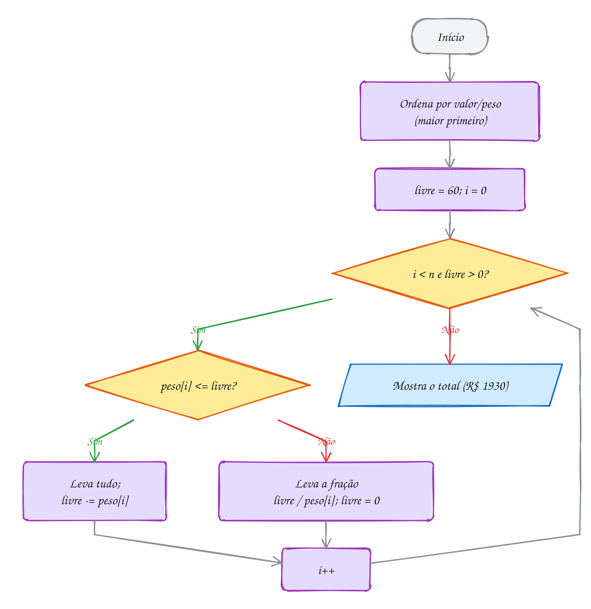
Exemplo A269 · Três critérios para a mesma carga
#include <stdio.h>
#include <stdlib.h>
#include <string.h>
typedef struct {
const char *nome;
double peso, valor;
} Item;
int maior_valor(const void *a, const void *b) {
const Item *x = a, *y = b;
return (x->valor < y->valor) - (x->valor > y->valor);
}
int menor_peso(const void *a, const void *b) {
const Item *x = a, *y = b;
return (x->peso > y->peso) - (x->peso < y->peso);
}
int maior_razao(const void *a, const void *b) {
const Item *x = a, *y = b;
double rx = x->valor / x->peso, ry = y->valor / y->peso;
return (rx < ry) - (rx > ry);
}
// o mesmo guloso da mochila fracionária, com o critério de ordem como parâmetro
double carrega(const Item itens[], int n, double cap,
int (*criterio)(const void *, const void *)) {
Item c[10];
memcpy(c, itens, n * sizeof itens[0]); // não bagunça o vetor original
qsort(c, n, sizeof c[0], criterio);
double total = 0;
for (int i = 0; i < n && cap > 0; i++) {
double leva = c[i].peso <= cap ? c[i].peso : cap;
total += c[i].valor * leva / c[i].peso;
cap -= leva;
printf(" %s %.0f", c[i].nome, leva);
}
printf("\n");
return total;
}
int main(void) {
// sucata a granel no ferro-velho; o carrinho leva 100 kg
Item s[] = {
{"cobre", 30, 1050}, {"alumínio", 50, 400}, {"latão", 25, 500},
{"ferro", 120, 600}, {"fios", 10, 30},
};
int n = 5;
printf("Maior valor primeiro:");
double a = carrega(s, n, 100, maior_valor);
printf(" R$ %.2f\n", a);
printf("Menor peso primeiro:");
double b = carrega(s, n, 100, menor_peso);
printf(" R$ %.2f\n", b);
printf("Maior R$/kg primeiro:");
double c = carrega(s, n, 100, maior_razao);
printf(" R$ %.2f\n", c);
// o ferro tem o maior valor TOTAL, mas paga só R$ 5/kg: ocupa 70 kg que
// renderiam muito mais com latão e alumínio
return 0;
}
// Saída:
// Maior valor primeiro: cobre 30 ferro 70
// R$ 1400.00
// Menor peso primeiro: fios 10 latão 25 cobre 30 alumínio 35
// R$ 1860.00
// Maior R$/kg primeiro: cobre 30 latão 25 alumínio 45
// R$ 1910.00
gcc ~/LPEDC/material/A269.c -o ~/LPEDC/material/A269 && ~/LPEDC/material/A269
Exemplo A270 · Quando o item não se divide: o guloso perde
#include <stdio.h>
#define N 5
// mochila 0/1: cada item vai inteiro ou fica. O guloso por razão é rápido,
// mas não garante o melhor. Aqui ele é comparado com a força bruta, que testa
// os 2^5 = 32 subconjuntos (um bit por item, como no assunto 0125).
int main(void) {
const char *nome[N] = {"videogame", "relógios", "caixas de som", "TV", "panela elétrica"};
int peso[N] = {6, 2, 8, 12, 9}; // kg (já em ordem de R$/kg)
int valor[N] = {600, 180, 640, 900, 630}; // R$ de revenda
int cap = 20; // limite da mala, em kg
// guloso por razão: leva o item inteiro se couber
int livre = cap, guloso = 0;
printf("Guloso:");
for (int i = 0; i < N; i++) {
if (peso[i] <= livre) {
livre -= peso[i];
guloso += valor[i];
printf(" [%s]", nome[i]);
}
}
printf(" = R$ %d (%d kg)\n", guloso, cap - livre);
// força bruta: o subconjunto de maior valor que cabe
int melhor = 0, escolha = 0;
for (int m = 0; m < (1 << N); m++) {
int p = 0, v = 0;
for (int i = 0; i < N; i++) {
if (m & (1 << i)) {
p += peso[i];
v += valor[i];
}
}
if (p <= cap && v > melhor) {
melhor = v;
escolha = m;
}
}
printf("Ótimo: ");
int p = 0;
for (int i = 0; i < N; i++) {
if (escolha & (1 << i)) {
printf(" [%s]", nome[i]);
p += peso[i];
}
}
printf(" = R$ %d (%d kg)\n", melhor, p);
// o guloso enche 16 kg com os itens de melhor razão e deixa 4 kg sem
// uso, porque a TV (12 kg) não cabe mais. Na fracionária, esses 4 kg
// levariam um terço da TV (R$ 300): R$ 1720, um teto para a 0/1.
return 0;
}
// Saída:
// Guloso: [videogame] [relógios] [caixas de som] = R$ 1420 (16 kg)
// Ótimo: [videogame] [relógios] [TV] = R$ 1680 (20 kg)
gcc ~/LPEDC/material/A270.c -o ~/LPEDC/material/A270 && ~/LPEDC/material/A270
Exercício E805 · ★☆☆
A cooperativa de reciclagem vende para uma usina, e o caminhão leva 1000 kg. No depósito há três lotes, já em ordem decrescente de R$/kg:
PET: 300 kg, R$ 750 o lote
papelão: 500 kg, R$ 400 o lote
vidro: 800 kg, R$ 160 o lote
Escreva o laço da mochila fracionária: leve cada lote inteiro enquanto couber e, no primeiro que não couber, só a parte que completa o caminhão. Mostre o que vai de cada material e o total.
Saída esperada:
300 kg de PET: R$ 750.00
500 kg de papelão: R$ 400.00
200 kg de vidro: R$ 40.00
Total: R$ 1190.00
Exercício E807 · ★★☆
O feirante tem 15 kg de espaço e três caixas de fruta de 10 kg: uva (R$ 42, ou R$ 4,20/kg), caqui (R$ 20) e ameixa (R$ 48, ou R$ 4,80/kg). Escreva a mochila fracionária: guarde as caixas numa struct Caixa (fruta, kg, valor), ordene por R$/kg decrescente com qsort (escreva a função de comparação) e leve caixas inteiras enquanto couber, e só a parte que completa no primeiro que não couber. Mostre os kg levados de cada fruta e o total.
Saída esperada:
10 kg de ameixa
5 kg de uva
Total: R$ 69.00
Exercício E808 · ★★☆
A mochila fracionária ao contrário: em vez de MAXIMIZAR o valor levado, MINIMIZAR o custo de uma compra. Um posto precisa de 30 000 litros de gasolina. Quatro distribuidoras vendem, cada uma, até um limite de litros por um preço fixo por litro:
A: até 12 000 L a R$ 5,10 B: até 8 000 L a R$ 4,95
C: até 15 000 L a R$ 5,25 D: até 6 000 L a R$ 4,89
Compre da mais barata para a mais cara, até completar. Guarde os preços em CENTAVOS (int) e o custo em centavos num long long; mostre em reais com / 100 e % 100.
Saída esperada:
D: 6000 L a R$ 4.89 = R$ 29340.00
B: 8000 L a R$ 4.95 = R$ 39600.00
A: 12000 L a R$ 5.10 = R$ 61200.00
C: 4000 L a R$ 5.25 = R$ 21000.00
Total: R$ 151140.00
Exercício E809 · ★★★
Uma transportadora tem 8 tipos de carga esperando e um caminhão com 700 kg livres. Ordenar as 8 pela razão funciona, mas, quando o caminhão enche logo, quase toda a ordenação é desperdício. Use um HEAP DE MÁXIMO pela razão (assunto 0102): monte o heap em O(n), com a descida a partir do último pai, e tire o topo só enquanto houver espaço.
móveis 400 kg R$ 2000 eletrônicos 150 kg R$ 4500
roupas 200 kg R$ 3000 cimento 900 kg R$ 900
remédios 50 kg R$ 2500 livros 300 kg R$ 1800
brinquedos 250 kg R$ 2750 areia 1000 kg R$ 300
Saída esperada:
50 de 50 kg R$ 2500.00 remédios
150 de 150 kg R$ 4500.00 eletrônicos
200 de 200 kg R$ 3000.00 roupas
250 de 250 kg R$ 2750.00 brinquedos
50 de 300 kg R$ 300.00 livros
Total: R$ 13050.00
Itens tirados do heap: 5 de 8
Na placa da barraca está escrito BANANA NA CABANA. São 16 caracteres, e
com 8 bits por caractere a frase ocupa 128 bits. Mas ela usa só 5
símbolos: A, N, B, C e o espaço. Com 3 bits cada, já daria para numerar os
cinco, e a frase cairia para 48 bits. E dá para gastar menos ainda, porque o
A aparece 7 vezes e o C, uma só.
A ideia é usar um código de tamanho variável: o símbolo frequente ganha
um código curto e o raro ganha um comprido, como no Morse, em que o E é um
ponto só. No total, a mensagem gasta menos bits que com o código fixo
(TENENBAUM; LANGSAM; AUGENSTEIN, 1995, seção 5.3). O preço é uma dúvida nova:
na hora de ler, onde termina um código e começa o seguinte? Se A = 0 e
N = 01, a sequência 001 pode ser "A, A, e o começo de outra coisa" ou
"A, N".
A saída é exigir um código livre de prefixo: nenhum código é o começo de
outro. Assim, quem lê a sequência de bits da esquerda para a direita sabe
que um código terminou no instante em que ele bate com um da tabela, sem
precisar olhar adiante (CORMEN et al., 2024, cap. 15). Com A = 0 e N = 10,
o 0 só pode ser A, e 10 só pode ser N.
Todo código livre de prefixo cabe numa árvore binária de código. Cada
símbolo é uma folha, um nó sem filhos. O código de um símbolo é o
caminho da raiz até a folha dele: cada passo para a esquerda escreve 0 e
cada passo para a direita escreve 1. Como os símbolos só moram nas folhas,
nenhum caminho passa por outro símbolo, e o prefixo nunca se repete. O
tamanho do código é a profundidade da folha, e o total de bits da
mensagem é a soma de frequência × profundidade de todas as folhas
(SZWARCFITER; MARKENZON, 2010).
Resta achar a árvore que deixa essa soma mínima. David Huffman mostrou que um guloso (0133) acha (HUFFMAN, 1952). Crie uma folha por símbolo, com a frequência dele, e ponha todas num heap de mínimo (0102), a estrutura que entrega sempre o menor elemento. Enquanto houver mais de um nó no heap, tire os dois de menor frequência, crie um nó pai com os dois como filhos e com a soma das frequências, e devolva o pai ao heap. Quando sobrar um nó só, ele é a raiz.
A intuição do guloso: os dois símbolos mais raros devem ficar no fundo da
árvore, com os códigos mais longos, porque pagam pouco por isso. Juntá-los
primeiro garante que fiquem lá embaixo, irmãos. Na frase da barraca, A = 7,
N = 4, B = 2, espaço = 2 e C = 1. C e espaço viram um nó de 3; ele e o B viram
5; com o N, 9; com o A, a raiz, 16. O A fica a um passo da raiz e ganha o
código 0; o C fica no fundo e ganha 1110. O total cai para 33 bits.
O custo vem do heap. Para k símbolos são k - 1 junções, porque cada uma
diminui o heap em um nó, e cada operação no heap custa O(log k). O total é
O(k log k). A árvore final tem k folhas e k - 1 nós internos, ou
seja, 2k - 1 nós (CORMEN et al., 2024, cap. 15).
Quando duas frequências empatam, o heap pode tirar uma ou outra primeiro, e saem árvores diferentes. Todas são ótimas, com o mesmo total de bits, mas os códigos mudam. Por isso quem decodifica precisa da mesma árvore de quem codificou: o arquivo compactado guarda a árvore, ou as frequências e a regra de desempate (TENENBAUM; LANGSAM; AUGENSTEIN, 1995, seção 5.3).
[!WARNING] Se o desempate mudar entre codificar e decodificar, os códigos mudam e a frase sai trocada. E indexe a frequência por
(unsigned char)*p: comcharcom sinal, os bytes de acento em UTF-8 são negativos efreq[*p]lê fora do vetor.
A placa BANANA NA CABANA tem 16 letras e só 5 símbolos: A = 7, N = 4, B = 2,
espaço = 2 e C = 1. C e espaço viram 3; com o B, 5; com o N, 9; com o A, a raiz
16. O A ganha 0 e o C, 1110:
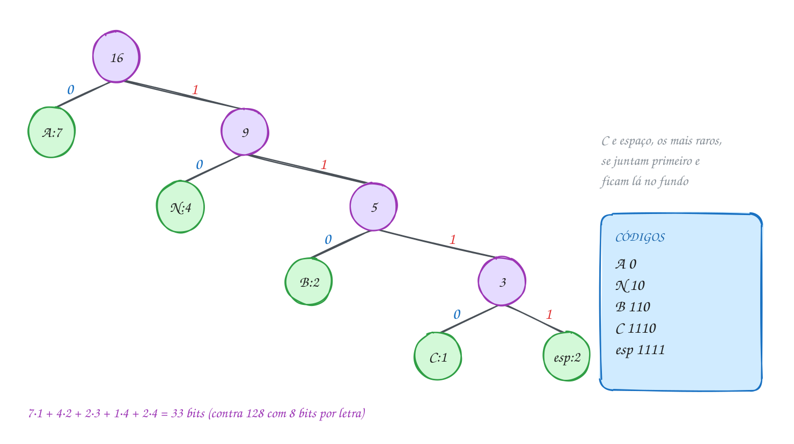
O TAD está em huffman.h e huffman.c. A parte central é o laço do guloso,
com um heap de mínimo de ponteiros para nó:
NoHuf *huf_constroi(const long freq[256]) {
Heap h = {.n = 0};
for (int c = 0; c < 256; c++) {
if (freq[c] > 0) {
poe(&h, novo_no((unsigned char)c, freq[c], c, NULL, NULL));
}
}
if (h.n == 0) {
return NULL;
}
int criados = 0;
while (h.n > 1) {
NoHuf *a = tira(&h); // o menos frequente vira o filho 0
NoHuf *b = tira(&h); // o segundo vira o filho 1
poe(&h, novo_no(0, a->freq + b->freq, 256 + criados++, a, b));
}
return tira(&h);
}
O campo ordem (terceiro argumento de novo_no) desempata frequências
iguais: folhas usam o próprio byte e nós internos, 256 em diante. O cliente
conta as frequências, monta a árvore e mostra os códigos:
#include <stdio.h>
#include <string.h>
#include "huffman.h"
int main(void) {
const char *frase = "BANANA NA CABANA";
long freq[256] = {0};
for (const char *p = frase; *p != '\0'; p++) {
freq[(unsigned char)*p]++; // conta cada byte
}
NoHuf *raiz = huf_constroi(freq);
static char cod[256][256]; // 64 KB: static, fora da pilha
huf_codigos(raiz, cod);
long bits = 0;
for (int c = 0; c < 256; c++) {
if (freq[c] > 0) {
printf("'%c' aparece %ld vez(es): %s\n", c, freq[c], cod[c]);
bits += freq[c] * (long)strlen(cod[c]);
}
}
printf("Codificada: ");
for (const char *p = frase; *p != '\0'; p++) {
printf("%s", cod[(unsigned char)*p]);
}
printf("\n%ld bits, contra %zu com 8 bits por letra\n", bits, 8 * strlen(frase));
huf_libera(raiz);
return 0;
}
// Saída:
// ' ' aparece 2 vez(es): 1111
// 'A' aparece 7 vez(es): 0
// 'B' aparece 2 vez(es): 110
// 'C' aparece 1 vez(es): 1110
// 'N' aparece 4 vez(es): 10
// Codificada: 110010010011111001111111001100100
// 33 bits, contra 128 com 8 bits por letra
São 7·1 + 4·2 + 2·3 + 1·4 + 2·4 = 33 bits, contra 48 do código fixo de 3 bits.
No huf_constroi, cada volta tira dois nós e põe um: 4 voltas para 5 folhas:
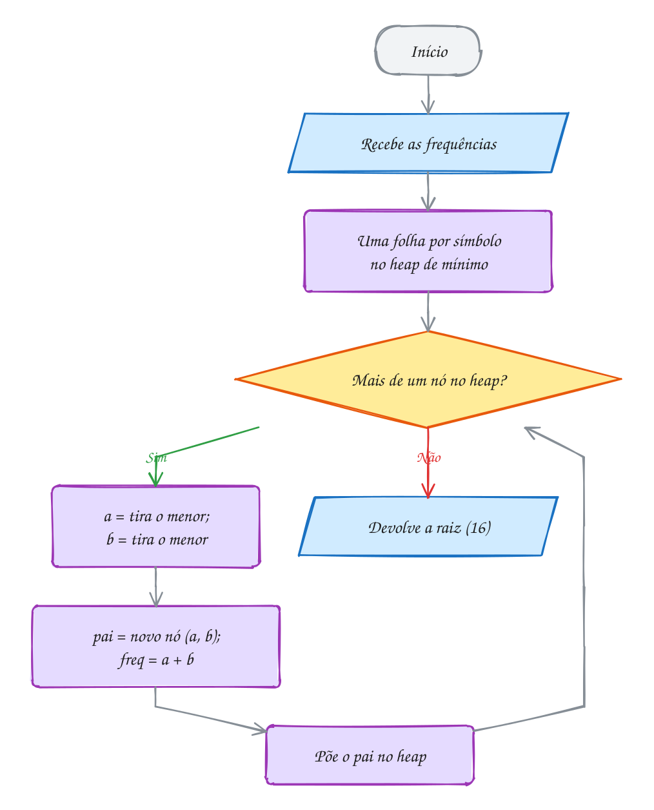
Heap a cada junção. No empate, desempata o byte (espaço, 32, antes do B, 66):
| junção | heap antes | tira | cria |
|---|---|---|---|
| 1 | C:1, esp:2, B:2, N:4, A:7 | C:1 e esp:2 | 3 |
| 2 | B:2, 3, N:4, A:7 | B:2 e 3 | 5 |
| 3 | N:4, 5, A:7 | N:4 e 5 | 9 |
| 4 | A:7, 9 | A:7 e 9 | 16 (a raiz) |
Exemplo A271 · Decodificar descendo a árvore (e o estrago de um bit errado)
#include <stdio.h>
#include <string.h>
#include "0136-huffman.h"
// lê os bits: 0 desce à esquerda, 1 à direita; ao chegar numa folha,
// escreve o símbolo e volta para a raiz
void decodifica(const NoHuf *raiz, const char *bits) {
const NoHuf *no = raiz;
for (const char *b = bits; *b != '\0'; b++) {
no = (*b == '0') ? no->esq : no->dir;
if (huf_folha(no)) {
putchar(no->simbolo);
no = raiz;
}
}
putchar('\n');
}
int main(void) {
const char *frase = "O RATO ROEU A ROUPA";
long freq[256] = {0};
for (const char *p = frase; *p != '\0'; p++) {
freq[(unsigned char)*p]++;
}
NoHuf *raiz = huf_constroi(freq);
static char cod[256][256];
huf_codigos(raiz, cod);
// quem envia: concatena os códigos
char bits[256] = "";
for (const char *p = frase; *p != '\0'; p++) {
strcat(bits, cod[(unsigned char)*p]);
}
printf("Bits (%zu): %s\n", strlen(bits), bits);
// quem recebe: só com a árvore e os bits, refaz a frase
printf("Decodificado: ");
decodifica(raiz, bits);
// um bit trocado na transmissão: o leitor perde o passo, junta pedaços
// de códigos vizinhos e só se reencontra algumas letras depois. Até o
// número de letras muda. Arquivo compactado não tolera bit errado.
bits[7] = (bits[7] == '0') ? '1' : '0';
printf("Com o bit 7 trocado: ");
decodifica(raiz, bits);
huf_libera(raiz);
return 0;
}
// Saída:
// Bits (54): 010011010111100100110011000111100101001100111111001101
// Decodificado: O RATO ROEU A ROUPA
// Com o bit 7 trocado: O R U PPEU A ROUPA
gcc ~/LPEDC/material/A271.c ~/LPEDC/material/0136-huffman.c -o ~/LPEDC/material/A271 && ~/LPEDC/material/A271
Exemplo A272 · Juntar planilhas pelo menor custo: o mesmo guloso, sem árvore
#include <stdio.h>
// heap de mínimo de int, escrito aqui mesmo (bem menor que o do huffman.c)
typedef struct {
int v[16];
int n;
} Heap;
void poe(Heap *h, int x) {
int i = h->n++;
h->v[i] = x;
while (i > 0 && h->v[i] < h->v[(i - 1) / 2]) {
int t = h->v[i];
h->v[i] = h->v[(i - 1) / 2];
h->v[(i - 1) / 2] = t;
i = (i - 1) / 2;
}
}
int tira(Heap *h) {
int topo = h->v[0];
h->v[0] = h->v[--h->n];
int i = 0;
while (2 * i + 1 < h->n) {
int f = 2 * i + 1;
if (f + 1 < h->n && h->v[f + 1] < h->v[f]) {
f++;
}
if (h->v[i] <= h->v[f]) {
break;
}
int t = h->v[i];
h->v[i] = h->v[f];
h->v[f] = t;
i = f;
}
return topo;
}
int main(void) {
// mil linhas de cada planilha de vendas, já ordenadas por data.
// Juntar (intercalar) duas custa a soma das linhas das duas.
int linhas[] = {12, 40, 7, 25, 18};
int n = 5;
// na ordem em que chegaram: junta a 1ª com a 2ª, o resultado com a 3ª...
int acumulado = linhas[0], custo_ordem = 0;
for (int i = 1; i < n; i++) {
acumulado += linhas[i];
custo_ordem += acumulado;
}
printf("Na ordem de chegada: %d mil linhas lidas\n", custo_ordem);
// guloso de Huffman: sempre as duas MENORES
Heap h = {.n = 0};
for (int i = 0; i < n; i++) {
poe(&h, linhas[i]);
}
int custo = 0;
while (h.n > 1) {
int a = tira(&h);
int b = tira(&h);
printf(" junta %2d + %2d = %3d\n", a, b, a + b);
custo += a + b;
poe(&h, a + b);
}
printf("As duas menores primeiro: %d mil linhas lidas\n", custo);
// cada planilha é relida uma vez por junção de que participa: a
// "profundidade" dela na árvore das junções. Exatamente a conta do Huffman.
return 0;
}
// Saída:
// Na ordem de chegada: 297 mil linhas lidas
// junta 7 + 12 = 19
// junta 18 + 19 = 37
// junta 25 + 37 = 62
// junta 40 + 62 = 102
// As duas menores primeiro: 220 mil linhas lidas
gcc ~/LPEDC/material/A272.c ~/LPEDC/material/0136-huffman.c -o ~/LPEDC/material/A272 && ~/LPEDC/material/A272
Exercício E811 · ★☆☆
Use o TAD huffman.h da pasta para comprimir a frase "PAPAI PAGOU A PIPOCA": conte as frequências, monte a árvore, gere os códigos e mostre, para cada símbolo que aparece (na ordem da tabela ASCII), a frequência e o código. No fim, o total de bits, o tamanho original (8 bits por letra) e a porcentagem.
Saída esperada:
' ' 3: 110
'A' 5: 01
'C' 1: 0010
'G' 1: 0011
'I' 2: 1111
'O' 2: 000
'P' 5: 10
'U' 1: 1110
55 bits de 160 (34.4%)
gcc ~/LPEDC/material/E811.c ~/LPEDC/material/0136-huffman.c -o ~/LPEDC/material/E811 && ~/LPEDC/material/E811
Exercício E813 · ★★☆
Chegou uma mensagem compactada, junto com a TABELA de códigos (sem a árvore). Decodifique usando só a tabela:
E 00 S 01 T 100 O 101 U 1100 espaço 1101 B 1110 M 1111
Bits: 0001100101110011011110001111
Como o código é livre de prefixo, dá para ler assim: vá juntando os bits num buffer, um por um; a cada bit, compare o buffer com todos os códigos (strcmp). Quando bater, escreva o símbolo e esvazie o buffer. No fim, se sobrar algo no buffer, avise.
Saída esperada:
Mensagem: ESTOU BEM
gcc ~/LPEDC/material/E813.c ~/LPEDC/material/0136-huffman.c -o ~/LPEDC/material/E813 && ~/LPEDC/material/E813
Exercício E814 · ★★☆
Cinco arquivos de log, de 8, 3, 15, 6 e 10 MB, precisam ser juntados (intercalados) dois a dois, e juntar dois custa a soma dos tamanhos. Use o guloso do Huffman: sempre as duas MENORES. Escreva um heap de mínimo sobre vetor (poe e tira) e junte até sobrar um arquivo só, devolvendo cada soma ao heap. Mostre cada junção (a menor primeiro) e o custo total.
Saída esperada:
junta 3 + 6
junta 8 + 9
junta 10 + 15
junta 17 + 25
Custo: 93 MB lidos
gcc ~/LPEDC/material/E814.c ~/LPEDC/material/0136-huffman.c -o ~/LPEDC/material/E814 && ~/LPEDC/material/E814
Exercício E815 · ★★★
Código canônico: o compactador guarda só o COMPRIMENTO do código de cada símbolo e refaz os códigos por uma regra fixa:
Saída esperada:
'A' 1 bits: 0 (Huffman deu 0)
'N' 2 bits: 10 (Huffman deu 10)
'B' 3 bits: 110 (Huffman deu 110)
' ' 4 bits: 1110 (Huffman deu 1111)
'C' 4 bits: 1111 (Huffman deu 1110)
gcc ~/LPEDC/material/E815.c ~/LPEDC/material/0136-huffman.c -o ~/LPEDC/material/E815 && ~/LPEDC/material/E815
A feira do bairro manda a lista de preços para as barracas por um rádio lento, e cada byte economizado é tempo de transmissão a menos. Para isso servem dois programas que andam juntos. Um compactador grava uma versão menor de um arquivo; um descompactador recebe essa versão e devolve o original, idêntico byte por byte (SZWARCFITER; MARKENZON, 2010). Este projeto monta os dois em cima do Huffman (0136).
No 0136, os códigos eram textos como "1110", um caractere por bit. Isso
serve para ver a árvore, mas não economiza nada: cada '1' ocupa um byte
inteiro. Num arquivo de verdade, o código vira bits de verdade. O arquivo
só sabe gravar bytes, então o programa junta os bits, 8 por vez, num
unsigned char, empurrando cada bit novo com << e acendendo-o com |
(0065). Quando o byte enche, ele vai para o arquivo. O último byte quase
nunca enche, e vai completado com zeros (KERNIGHAN; RITCHIE, 1989).
Esses zeros criam um problema. O descompactador lê bits até o fim do
arquivo, e os zeros de enchimento parecem dados: um 0 pode ser o código do
A. Por isso o descompactador precisa saber quantos bytes o original tinha e
parar exatamente ao escrever o último (LINTZMAYER; MOTA, 2023).
O descompactador também precisa da mesma árvore que o compactador usou,
senão os códigos não batem. Ele não tem o texto original para contar as
frequências. A saída é gravar um cabeçalho no começo do arquivo
compactado: uma assinatura, HUF1, que identifica o formato; o tamanho
original; e as 256 frequências, uma por valor de byte. Com elas, o
descompactador chama o mesmo huf_constroi, que desempata sempre do mesmo
jeito, e chega à mesma árvore (TENENBAUM; LANGSAM; AUGENSTEIN, 1995, seção
5.3).
O cabeçalho precisa ter o mesmo tamanho em qualquer máquina. O tamanho de
long varia: 8 bytes no Linux de 64 bits, 4 no Windows. Os tipos uint64_t
e uint32_t, de stdint.h, têm sempre 8 e 4 bytes (CPPREFERENCE, s.d.). Com
eles, o cabeçalho tem sempre 4 + 8 + 1024 = 1036 bytes.
O compactador lê o arquivo duas vezes. Na primeira passada, conta quantas
vezes cada byte aparece e monta a árvore. Na segunda, com a árvore pronta,
troca cada byte pelo seu código. Entre uma e outra, rewind volta a leitura
para o começo do arquivo (KERNIGHAN; RITCHIE, 1989).
O descompactador faz o caminho inverso. Ele lê o cabeçalho, monta a árvore
e anda nela bit a bit, a partir da raiz: 0 desce para a esquerda, 1 para
a direita. Ao chegar numa folha, escreve o byte dela e volta à raiz para o
próximo (CORMEN et al., 2024, cap. 15). Como o código é livre de prefixo,
nunca há dúvida sobre onde um símbolo termina.
Quanto dá para ganhar? Há um limite. Shannon mostrou que nenhum código sem perda comprime abaixo da entropia da fonte, uma medida de quanta incerteza cada símbolo carrega em média (SHANNON, 1948). Um arquivo com poucos símbolos, alguns muito frequentes, tem entropia baixa e comprime bem. Um arquivo em que todos os 256 bytes aparecem por igual quase não comprime, e o cabeçalho de 1036 bytes ainda o deixa maior.
[!WARNING] Sem o
descarregano fim, os bits do byte incompleto se perdem. Teste a ida e volta comparando byte a byte, e abra os arquivos em modo binário ("rb","wb").
A feira do bairro manda a lista de preços por um rádio lento. A lista (6 linhas repetidas 40 vezes) tem 9560 bytes; compactada, 6156: 1036 de cabeçalho e 5120 de bits:
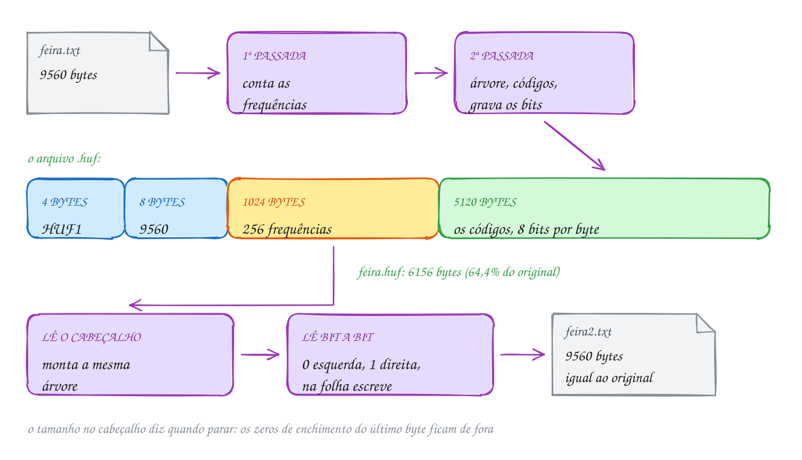
A peça central do compactador.c escreve bits soltos; a struct Bits guarda
o byte em construção e quantos bits ele já tem:
static void escreve_bit(Bits *b, int bit) {
b->byte = (unsigned char)((b->byte << 1) | bit); // entra pela direita
b->n++;
if (b->n == 8) { // byte cheio: grava
fputc(b->byte, b->f);
b->byte = 0;
b->n = 0;
}
}
static void descarrega(Bits *b) {
if (b->n > 0) { // completa com zeros
fputc((unsigned char)(b->byte << (8 - b->n)), b->f);
b->byte = 0;
b->n = 0;
}
}
O programa cria o arquivo da feira, compacta, descompacta, compara com o original e apaga os arquivos de teste:
#include <stdio.h>
#include "compactador.h"
// grava a lista de preços da feira, repetida 40 vezes (um arquivo de uns 10 KB)
int cria_exemplo(const char *nome) {
const char *linhas[] = {
"Tomate italiano ........ R$ 8,90 o kg\n",
"Banana prata ........... R$ 5,50 a dúzia\n",
"Alface crespa .......... R$ 3,00 o pé\n",
"Batata inglesa ......... R$ 6,20 o kg\n",
"Ovos caipiras .......... R$ 18,00 a dúzia\n",
"Queijo minas ........... R$ 42,00 o kg\n",
};
FILE *f = fopen(nome, "w");
if (f == NULL) {
return 0;
}
for (int r = 0; r < 40; r++) {
for (int i = 0; i < 6; i++) {
fputs(linhas[i], f);
}
}
fclose(f);
return 1;
}
// confere byte a byte se dois arquivos são iguais
int iguais(const char *a, const char *b) {
FILE *fa = fopen(a, "rb");
FILE *fb = fopen(b, "rb");
int ok = fa != NULL && fb != NULL;
while (ok) {
int ca = fgetc(fa), cb = fgetc(fb);
if (ca != cb) ok = 0;
if (ca == EOF || cb == EOF) break;
}
if (fa) fclose(fa);
if (fb) fclose(fb);
return ok;
}
int main(void) {
if (!cria_exemplo("feira.txt")) {
return 1;
}
long original = arq_tamanho("feira.txt");
long compacto = huf_compacta("feira.txt", "feira.huf");
long volta = huf_descompacta("feira.huf", "feira2.txt");
printf("feira.txt: %ld bytes\n", original);
printf("feira.huf: %ld bytes (%.1f%% do original)\n", compacto, 100.0 * compacto / original);
printf("feira2.txt: %ld bytes, %s\n", volta,
iguais("feira.txt", "feira2.txt") ? "igual ao original" : "DIFERENTE");
remove("feira.txt");
remove("feira.huf");
remove("feira2.txt");
return 0;
}
// Saída:
// feira.txt: 9560 bytes
// feira.huf: 6156 bytes (64.4% do original)
// feira2.txt: 9560 bytes, igual ao original
O cabeçalho é custo fixo: pesado em arquivo pequeno, irrelevante nos grandes.
No huf_descompacta, cada byte começa na raiz e lê bits até uma folha; o laço
de fora para no tamanho original:
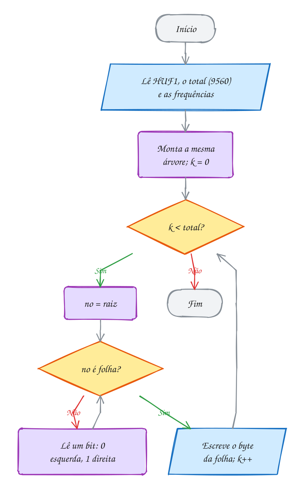
Exemplo A273 · O compactador na linha de comando
#include <stdio.h>
#include <string.h>
#include "0137-compactador.h"
// uso: c entrada saida (compacta)
// d entrada saida (descompacta)
int main(int argc, char *argv[]) {
if (argc != 4 || (strcmp(argv[1], "c") != 0 && strcmp(argv[1], "d") != 0)) {
fprintf(stderr, "uso: A273 c|d entrada saida\n");
return 1;
}
long antes = arq_tamanho(argv[2]);
if (antes < 0) {
fprintf(stderr, "não consegui abrir %s\n", argv[2]);
return 1;
}
long depois = argv[1][0] == 'c' ? huf_compacta(argv[2], argv[3])
: huf_descompacta(argv[2], argv[3]);
if (depois < 0) {
fprintf(stderr, "falhou (%s não é um arquivo .huf?)\n", argv[2]);
return 1;
}
printf("%s: %ld bytes -> %s: %ld bytes", argv[2], antes, argv[3], depois);
if (antes > 0) {
printf(" (%.1f%%)", 100.0 * depois / antes);
}
printf("\n");
return 0;
}
// Sem argumentos, mostra o uso e termina com 1:
// uso: A273 c|d entrada saida
//
// Rodando de dentro de ~/LPEDC, compactando e descompactando o huffman.c
// desta pasta:
// ~/LPEDC/rodar 20-dc-e-gulosos/0137-juntando-tudo/A273.c c 20-dc-e-gulosos/0137-juntando-tudo/huffman.c /tmp/h.huf
// 20-dc-e-gulosos/0137-juntando-tudo/huffman.c: 3110 bytes -> /tmp/h.huf: 2900 bytes (93.2%)
// ~/LPEDC/rodar 20-dc-e-gulosos/0137-juntando-tudo/A273.c d /tmp/h.huf /tmp/h.c
// /tmp/h.huf: 2900 bytes -> /tmp/h.c: 3110 bytes (107.2%)
//
// Um código-fonte pequeno mal compensa o cabeçalho de 1036 bytes: sem ele,
// os bits ocupariam 1864 bytes, 60% do original.
gcc ~/LPEDC/material/A273.c ~/LPEDC/material/0137-compactador.c ~/LPEDC/material/0137-huffman.c -o ~/LPEDC/material/A273 && ~/LPEDC/material/A273
Exemplo A274 · Nem tudo encolhe
#include <stdio.h>
#include <stdlib.h>
#include "0137-compactador.h"
// grava n bytes gerados por uma regra e mostra quanto o .huf ocupa
void testa(const char *rotulo, int n, int tipo) {
FILE *f = fopen("teste.bin", "wb");
if (f == NULL) {
return;
}
srand(2026);
for (int i = 0; i < n; i++) {
int c;
if (tipo == 0) {
c = 'A'; // um byte só, repetido
} else if (tipo == 1) {
c = "ACGT"[rand() % 4]; // DNA: 4 letras sorteadas
} else {
c = rand() % 256; // qualquer byte, sorteado
}
fputc(c, f);
}
fclose(f);
long depois = huf_compacta("teste.bin", "teste.huf");
printf("%-22s %6d -> %6ld bytes", rotulo, n, depois);
if (n > 0) {
printf(" (%.1f%%)", 100.0 * depois / n);
}
printf("\n");
remove("teste.bin");
remove("teste.huf");
}
int main(void) {
testa("vazio", 0, 0);
testa("1000 letras A", 1000, 0);
testa("100 000 letras A", 100000, 0);
testa("DNA sorteado", 100000, 1);
testa("bytes sorteados", 100000, 2);
// - vazio: só o cabeçalho (1036 bytes) e nenhum bit.
// - um símbolo só: 1 bit por byte, 1/8 do tamanho mais o cabeçalho.
// (Huffman nunca gasta menos de 1 bit por símbolo; quem comprime
// "AAAA..." de verdade conta repetições.)
// - DNA: 4 letras igualmente frequentes, 2 bits cada: 25%.
// - bytes sorteados: os 256 valores aparecem quase igual, todo código
// tem 8 bits, e o arquivo CRESCE com o cabeçalho. Por isso não adianta
// compactar um arquivo que já foi compactado.
return 0;
}
// Saída:
// vazio 0 -> 1036 bytes
// 1000 letras A 1000 -> 1161 bytes (116.1%)
// 100 000 letras A 100000 -> 13536 bytes (13.5%)
// DNA sorteado 100000 -> 26036 bytes (26.0%)
// bytes sorteados 100000 -> 101036 bytes (101.0%)
gcc ~/LPEDC/material/A274.c ~/LPEDC/material/0137-compactador.c ~/LPEDC/material/0137-huffman.c -o ~/LPEDC/material/A274 && ~/LPEDC/material/A274
Exercício E817 · ★☆☆
O restaurante por quilo guarda o cardápio de cada semana num arquivo. Use o TAD compactador.h da pasta: grave o cardápio abaixo 30 vezes seguidas num arquivo "cardapio.txt", compacte para "cardapio.huf", descompacte para "cardapio2.txt" e mostre os três tamanhos. No fim, apague os três arquivos com remove.
PRATO DO DIA
Segunda: feijoada com couve e laranja
Terça: frango assado com farofa
Quarta: feijoada com couve e laranja
Quinta: peixe com pirão
Sexta: feijoada com couve e laranja
Saída esperada:
Original: 5460 bytes
Compactado: 4096 bytes (75.0%)
Descompactado: 5460 bytes
gcc ~/LPEDC/material/E817.c ~/LPEDC/material/0137-compactador.c ~/LPEDC/material/0137-huffman.c -o ~/LPEDC/material/E817 && ~/LPEDC/material/E817
Exercício E819 · ★★☆
O cabeçalho do .huf tem 1036 bytes fixos. A partir de que tamanho a compactação compensa? Grave num arquivo "padaria.txt" a linha abaixo 1, 10, 30, 60, 100 e 300 vezes (um arquivo novo a cada caso), compacte cada um com o TAD compactador.h e monte a tabela:
Pão francês ..... R$ 0,75 a unidade
Saída esperada:
linhas original compactado
1 38 1057 não compensa
10 380 1240 não compensa
30 1140 1648 não compensa
60 2280 2259 compensa
100 3800 3074 compensa
300 11400 7149 compensa
gcc ~/LPEDC/material/E819.c ~/LPEDC/material/0137-compactador.c ~/LPEDC/material/0137-huffman.c -o ~/LPEDC/material/E819 && ~/LPEDC/material/E819
Exercício E820 · ★★☆
Escreva um programa que grave os 10 bits 1011001110 num arquivo "bits.bin", 8 por byte, e leia o arquivo de volta mostrando os bits de cada byte. Use struct Saida (arquivo, byte em formação e quantos bits já entraram) e duas funções: poe_bit(Saida *s, int bit), que acrescenta um bit e grava o byte quando juntar 8, e fecha_bits(Saida *s), que grava o byte incompleto. Os bits que sobram devem ir para a ESQUERDA do último byte, completados com zeros à direita (por isso 10 vira 10000000). Apague o arquivo no fim.
Saída esperada:
Lido: 10110011 10000000
2 byte(s) no arquivo
gcc ~/LPEDC/material/E820.c ~/LPEDC/material/0137-compactador.c ~/LPEDC/material/0137-huffman.c -o ~/LPEDC/material/E820 && ~/LPEDC/material/E820
Exercício E821 · ★★★
O cabeçalho do .huf guarda as 256 frequências, 1024 bytes, mesmo quando o texto usa só 5 símbolos. Escreva um cabeçalho compacto e confira a ida e volta, com as frequências de "BANANA NA CABANA":
para cada um, o byte (1 byte) e a frequência (um uint32_t);
original usando memcmp;
fechar) e se as frequências voltaram iguais. Apague o arquivo no fim.
Saída esperada:
Símbolos: 5
Cabeçalho compacto: 27 bytes (o completo tem 1024)
Frequências iguais
gcc ~/LPEDC/material/E821.c ~/LPEDC/material/0137-compactador.c ~/LPEDC/material/0137-huffman.c -o ~/LPEDC/material/E821 && ~/LPEDC/material/E821
30 exercícios que misturam os assuntos do módulo, no ritmo da prova. Arquivos P2001.c a P2030.c, em material/; resoluções em _respostas/20-dc-e-gulosos/lista/.
Exercício P2001 · ★☆☆ · A senha do painel
No painel do posto de saúde, as senhas chamadas hoje estão em ordem crescente: 3 8 12 15 21 27 33 40 46 52 58 64 71 79 85 90. Escreva do zero a busca binária RECURSIVA busca(v, ini, fim, x): olha o meio; se é x, devolve o índice; se x é menor, procura só na metade da esquerda; senão, só na da direita. Pedaço vazio (ini > fim) devolve -1. Conte as chamadas e procure as senhas 64, 3 e 50.
Saída esperada:
Senha 64: posição 11 (2 chamadas)
Senha 3: posição 0 (4 chamadas)
Senha 50: não chamada (5 chamadas)
Resposta esperada: 64 na posição 11 (2 chamadas), 3 na posição 0 (4 chamadas) e 50 não chamada (5 chamadas, a última com o pedaço vazio).
Exercício P2002 · ★☆☆ · Maior e menor temperatura, dividindo ao meio
A estação de Manaus registrou as máximas de 8 dias: 31 34 29 36 33 30 35 32 graus. Complete a função recursiva extremos(v, ini, fim, &menor, &maior), que acha os DOIS de uma vez por divisão e conquista: um elemento só é menor e maior ao mesmo tempo (0 comparações); dois elementos custam 1 comparação; com mais, divida ao meio, resolva cada metade e junte com 2 comparações (menor com menor, maior com maior). Conte as comparações entre temperaturas.
Saída esperada:
Menor: 29 graus
Maior: 36 graus
Comparações: 10
Resposta esperada: menor 29, maior 36 e 10 comparações, que é 3n/2 - 2 para n = 8. Achar os dois com dois laços separados custaria 2(n - 1) = 14.
Exercício P2003 · ★☆☆ · Os três últimos dígitos de 3^200
3^200 tem 96 dígitos e não cabe em nenhum inteiro do C. Mas para saber só os três últimos dígitos basta fazer a conta módulo 1000, reduzindo depois de cada multiplicação: (a · b) % m = ((a % m) · (b % m)) % m. Complete potmod(b, e, m), a potência rápida recursiva do assunto 0131 com o resto em cada passo, e conte as multiplicações. Mostre 3^200, 7^222 e 2^1000, todos módulo 1000.
Saída esperada:
3^200 termina em 001 (11 multiplicações)
7^222 termina em 049 (14 multiplicações)
2^1000 termina em 376 (16 multiplicações)
Resposta esperada: 3^200 termina em 001, 7^222 em 049 e 2^1000 em 376; as multiplicações estão na saída de cima.
Exercício P2004 · ★☆☆ · O caixa da feira com poucas moedas
A barraca de tapioca tem no caixa só 2 notas de R$ 10, 3 de R$ 5, 4 moedas de R$ 2 e 5 de R$ 1. O guloso do troco continua valendo (sempre a maior que cabe), mas agora ele precisa respeitar o estoque: uma nota só sai se ainda há dela. Complete troco(valor), que mostra o que sai, tira do estoque e devolve 1 se conseguiu pagar tudo (0 se faltou). Dê, nesta ordem, os trocos de R$ 27, R$ 18 e R$ 9.
Saída esperada:
Troco de R$ 27: 10 10 5 2
Troco de R$ 18: 5 5 2 2 2 1 1
Troco de R$ 9: 1 1 1
faltou troco!
Sobrou no caixa: 0 de 10, 0 de 5, 0 de 2, 0 de 1
Resposta esperada: 27 = 10 + 10 + 5 + 2; 18 = 5 + 5 + 2 + 2 + 2 + 1 + 1; o de 9 falha, porque sobram só 3 moedas de R$ 1.
Exercício P2005 · ★☆☆ · A melhor semana da lanchonete
A lanchonete anotou o lucro (ou prejuízo) de 10 dias, em reais:
dia: 0 1 2 3 4 5 6 7 8 9
lucro: -40 120 -30 80 -150 60 90 -20 70 -60
Qual sequência de dias SEGUIDOS deu o maior lucro somado? Escreva do zero o subvetor de soma máxima por divisão e conquista (assunto 0132), mas devolvendo também ONDE ele começa e termina: use um struct Trecho { int ini, fim, soma; }. O trecho que cruza o meio é o melhor final da esquerda grudado no melhor começo da direita.
Saída esperada:
Melhor trecho: dias 1 a 8
Lucro: R$ 220
Resposta esperada: dias 1 a 8, lucro de R$ 220. Vale a pena atravessar o prejuízo de R$ 150 do dia 4: os dias 5 a 8 sozinhos dão R$ 200.
Exercício P2006 · ★☆☆ · O barco de Parintins
Um barco sai de Manaus para Parintins com 500 kg livres no porão. O dono pode levar qualquer quantidade (dá para fracionar) de cinco produtos:
produto kg disponíveis valor total (R$)
castanha 200 3000
farinha 300 1500
guaraná 100 2500
pirarucu 150 4200
cupuaçu 250 2000
Escreva do zero a mochila fracionária: um struct Produto com nome, kg e valor; ordene com qsort pela razão valor/kg, da maior para a menor; leve inteiro enquanto couber e, no primeiro que não cabe, só a parte que cabe. Mostre o que vai e o valor total.
Saída esperada:
pirarucu: 150 kg, R$ 4200.00
guaraná: 100 kg, R$ 2500.00
castanha: 200 kg, R$ 3000.00
cupuaçu: 50 kg, R$ 400.00
Total: R$ 10100.00
Resposta esperada: pirarucu, guaraná e castanha inteiros (450 kg) e 50 kg de cupuaçu: R$ 10100.00.
Exercício P2007 · ★☆☆ · O código que confunde
O código de Huffman é LIVRE DE PREFIXO: nenhum código é o começo de outro, e por isso dá para ler a sequência de bits sem separador. Um estagiário montou três tabelas para os símbolos A, B, C, D e E e quer saber quais servem. Escreva do zero livre_de_prefixo(cod, n), que compara cada par de códigos e devolve 0 ao achar um que é começo do outro (mostrando qual), ou 1 se a tabela serve.
Tabela 1: A=0 B=10 C=110 D=1110 E=1111
Tabela 2: A=0 B=01 C=110 D=111 E=10
Tabela 3: A=00 B=01 C=10 D=110 E=111
Saída esperada:
Tabela 1:
serve
Tabela 2:
A=0 é começo de B=01
não serve
Tabela 3:
serve
Resposta esperada: as tabelas 1 e 3 servem; na 2, o 0 do A é começo do 01 do B (e "01" poderia ser AE... ou B).
Exercício P2008 · ★☆☆ · Os consertos da oficina
O mecânico faz um conserto por dia e tem 6 pedidos. Cada pedido tem um prazo (até que dia o cliente aceita esperar) e um valor; se ficar para depois do prazo, o cliente vai embora. Os pedidos JÁ estão em ordem decrescente de valor:
pedido A B C D E F
valor 300 250 200 150 100 80
prazo 2 1 2 3 3 1
O guloso do AGENDAMENTO COM PRAZOS pega os pedidos do mais valioso para o menos e põe cada um no ÚLTIMO dia livre que ainda está dentro do prazo dele (deixando os dias cedo para quem tem prazo curto). Se não há dia livre, o pedido é recusado. Complete o laço que procura o dia.
Saída esperada:
Recusado: C (R$ 200)
Recusado: E (R$ 100)
Recusado: F (R$ 80)
Dia 1: B (R$ 250)
Dia 2: A (R$ 300)
Dia 3: D (R$ 150)
Total: R$ 700
Resposta esperada: dia 1 B, dia 2 A, dia 3 D, total R$ 700.
Exercício P2009 · ★☆☆ · Quando a razão engana
A mochila fracionária é resolvida pelo guloso da razão valor/peso. Na mochila 0/1 (cada item vai inteiro ou não vai), o mesmo guloso pode errar. Uma mochila de 50 kg e três itens:
item peso valor
TV 10 600
som 20 1000
PC 30 1200
O programa abaixo já tem o guloso 0/1 (pega pela razão, inteiro, se couber). Complete otimo(), que testa os 2^3 subconjuntos por máscara de bits (assunto 0125) e devolve o maior valor que cabe. Mostre os dois.
Saída esperada:
Guloso pela razão: R$ 1600
Ótimo (força bruta): R$ 2200
Resposta esperada: guloso R$ 1600, ótimo R$ 2200 (som + PC).
Exercício P2010 · ★☆☆ · A poltrona com o próprio número
No teatro, os ingressos vendidos (já em ordem crescente e sem repetição) foram para as poltronas -5 -2 0 1 2 5 9 12 15 18 (o negativo é o camarote). O gerente desconfia que algum ingresso está na POSIÇÃO igual ao próprio número: v[i] == i. Escreva do zero pos_fixa(v, ini, fim), por divisão e conquista como a busca binária: se v[meio] < meio, a resposta só pode estar à direita; se v[meio] > meio, só à esquerda. Conte as chamadas.
Saída esperada:
Posição 5: v[5] = 5
Chamadas: 3
Resposta esperada: posição 5 (v[5] = 5), em 3 chamadas.
Exercício P2011 · ★★☆ · Mínimo e máximo de dois em dois
O aplicativo da corrida de rua guarda os tempos dos 10 atletas da categoria, em segundos: 1520 1384 1702 1455 1611 1398 1830 1290 1477 1563. Achar o menor com um laço e o maior com outro custa 2(n - 1) = 18 comparações. Dá para fazer com 3n/2 - 2: ande de DOIS em DOIS, compare os dois entre si (1 comparação), depois o menor deles com o mínimo e o maior com o máximo (mais 2). São 3 comparações para cada 2 elementos. Escreva do zero as duas versões, contando as comparações, e mostre os resultados.
Saída esperada:
Ingênuo: menor 1290, maior 1830, 18 comparações
Aos pares: menor 1290, maior 1830, 13 comparações
Resposta esperada: 1290 e 1830 nas duas; 18 comparações contra 13 (3 · 10 / 2 - 2). É o limite inferior para achar os dois (Cormen 9.1).
Exercício P2012 · ★★☆ · As duas antenas mais próximas
A operadora tem 8 antenas de celular num bairro, em coordenadas (em centenas de metros): (2, 3) (12, 30) (40, 50) (5, 1) (12, 10) (3, 4) (31, 33) (18, 21). Duas antenas muito perto se atrapalham. Qual é o PAR MAIS PRÓXIMO? A força bruta testa os 28 pares. Escreva do zero a divisão e conquista simples: ordene por x, divida ao meio, resolva cada metade, e depois olhe só os pontos da FAIXA a menos de d da linha do meio (d é a menor distância das metades), comparando cada um com os da faixa. Use força bruta quando houver 3 pontos ou menos. Mostre o par, a distância e quantas distâncias cada método calculou.
Saída esperada:
Força bruta: (2, 3) e (3, 4), 1.41, 28 distâncias
Divisão e conquista: (2, 3) e (3, 4), 1.41, 6 distâncias
Resposta esperada: (2, 3) e (3, 4), distância 1.41 (raiz de 2).
gcc ~/LPEDC/material/P2012.c -o ~/LPEDC/material/P2012 -lm && ~/LPEDC/material/P2012
Exercício P2013 · ★★☆ · A mediana sem ordenar tudo
Na fila do banco, o gerente cronometrou o atendimento de 11 clientes, em minutos: 7 15 3 22 9 4 18 11 6 13 2. Ele quer a MEDIANA (o 6º menor) sem ordenar o vetor inteiro. O SELECT pela partição do quicksort faz isso: particione em volta de um pivô; se o pivô caiu na posição k, achou; se k está à esquerda, continue só na esquerda; senão, só na direita. Uma metade só, a cada passo. Complete seleciona(v, ini, fim, k), usando a particao (Lomuto, pivô = último) que já está no programa.
Saída esperada:
6º menor: 9 (partições: 3)
1º menor: 2 (partições: 1)
11º menor: 22 (partições: 5)
Resposta esperada: mediana 9; o 1º menor é 2 e o 11º é 22.
Exercício P2014 · ★★☆ · Quantas salas para o congresso?
O congresso de computação em Manaus tem 9 palestras, cada uma num intervalo [ini, fim) em horas:
[9, 11) [9, 10) [10, 12) [11, 13) [10, 11) [12, 14) [13, 15) [9, 12)
[14, 16)
Qual é o MENOR número de salas para que nenhuma palestra tenha choque? Diferente da seleção de atividades (que escolhe um subconjunto), aqui todas acontecem. O guloso: ordene pelo início e ponha cada palestra numa sala que já ficou livre (fim da última palestra dela <= ini); se nenhuma está livre, abra uma sala nova. Escreva do zero e mostre a sala de cada palestra e o total.
Saída esperada:
[9, 10) -> sala 1
[9, 11) -> sala 2
[9, 12) -> sala 3
[10, 11) -> sala 1
[10, 12) -> sala 4
[11, 13) -> sala 1
[12, 14) -> sala 2
[13, 15) -> sala 1
[14, 16) -> sala 2
Salas: 4
Resposta esperada: 4 salas. Entre 10h e 11h há quatro palestras ao mesmo tempo ([9, 11), [9, 12), [10, 11) e [10, 12)), então nenhum arranjo usa menos: o guloso acerta o ótimo.
Exercício P2015 · ★★☆ · Huffman sem heap, para poucos símbolos
Com só 6 símbolos, o heap é exagero: dá para achar os dois nós de menor frequência com um laço simples, O(n) por passo. A rádio comunitária vai transmitir boletins com as letras A, E, M, N, O e S, com estas frequências (em cada 100 letras):
A: 30 E: 20 M: 5 N: 10 O: 25 S: 10
Escreva do zero a árvore de Huffman num vetor de nós (folhas nas posições 0 a 5, nós internos de 6 em diante), cada nó com freq, esq, dir e um flag de "já usado". Em cada passo, junte os dois de menor frequência ainda não usados. Depois, calcule a profundidade de cada folha (o tamanho do código) e o total de bits.
Saída esperada:
A: freq 30, código de 2 bits
E: freq 20, código de 2 bits
M: freq 5, código de 4 bits
N: freq 10, código de 4 bits
O: freq 25, código de 2 bits
S: freq 10, código de 3 bits
Total: 240 bits (código fixo: 300)
Resposta esperada: 240 bits para as 100 letras, contra 300 de um código fixo de 3 bits.
Exercício P2016 · ★★☆ · O menor atraso da gráfica
A gráfica tem 5 encomendas e uma impressora só. Cada encomenda tem a duração (em horas) e o prazo (a hora, contando do início do dia, em que o cliente vem buscar):
encomenda convites cardápios banner folhetos crachás
duração 3 2 4 1 2
prazo 6 4 10 3 7
O atraso de uma encomenda é max(0, fim - prazo). O guloso PRAZO MAIS CEDO PRIMEIRO (ordenar por prazo) minimiza o MAIOR atraso. Escreva do zero: compare a ordem da tabela com a ordem por prazo, mostrando o início e o fim de cada encomenda e o maior atraso de cada ordem.
Saída esperada:
Ordem da tabela:
convites: 0 a 3 (prazo 6, atraso 0)
cardápios: 3 a 5 (prazo 4, atraso 1)
banner: 5 a 9 (prazo 10, atraso 0)
folhetos: 9 a 10 (prazo 3, atraso 7)
crachás: 10 a 12 (prazo 7, atraso 5)
Maior atraso: 7 h
Prazo mais cedo primeiro:
folhetos: 0 a 1 (prazo 3, atraso 0)
cardápios: 1 a 3 (prazo 4, atraso 0)
convites: 3 a 6 (prazo 6, atraso 0)
crachás: 6 a 8 (prazo 7, atraso 1)
banner: 8 a 12 (prazo 10, atraso 2)
Maior atraso: 2 h
Resposta esperada: a ordem da tabela tem atraso máximo 7 (os folhetos ficam prontos às 10, com prazo 3) e a ordem por prazo, só 2.
Exercício P2017 · ★★☆ · Os postos da BR-319
Um carro sai de Manaus pela BR-319 rumo a Porto Velho, 880 km, e o tanque cheio dá 250 km. Os postos ficam nos quilômetros 90, 180, 240, 330, 420, 470, 560, 650, 700 e 790. O motorista quer parar o MENOR número de vezes. O guloso: só pare quando o próximo posto ficar fora do alcance, e pare no posto mais distante que ainda dá para alcançar. Escreva do zero e mostre as paradas e o total; se algum trecho entre postos for maior que 250 km, avise que é impossível.
Saída esperada:
Parada 1: km 240
Parada 2: km 470
Parada 3: km 700
Chegou a Porto Velho com 3 paradas
Resposta esperada: 3 paradas, nos km 240, 470 e 700.
Exercício P2018 · ★★☆ · Quem tem maioria absoluta?
Na eleição do síndico, os 15 votos (números dos candidatos) foram:
4 7 4 4 2 4 7 4 9 4 4 2 4 7 4
Um candidato tem MAIORIA ABSOLUTA se recebeu mais da metade dos votos. Escreva do zero por divisão e conquista: se v[ini..fim] tem majoritário, ele é majoritário de pelo menos uma das metades. Então resolva as duas metades e, para cada candidato que voltar, conte os votos dele no pedaço inteiro. Devolva -1 se não houver. Mostre o resultado também para a apuração da segunda urna: 1 2 3 1 2 3 1 2.
Saída esperada:
Urna 1: candidato 4, com 9 de 15 votos
Urna 2: ninguém tem maioria
Resposta esperada: na primeira urna, o 4, com 9 de 15 votos; na segunda, ninguém.
Exercício P2019 · ★★☆ · Rotas de ônibus com potência de matriz
Quatro terminais de ônibus (T0 a T3) são ligados por linhas diretas, dadas pela matriz de adjacência A (A[i][j] = 1 se há linha de Ti para Tj). Um fato bonito: o elemento (i, j) de A^k conta quantas rotas de EXATAMENTE k trechos vão de Ti a Tj. Calcule A^k pela potência rápida (assunto 0131), trocando a multiplicação de números pela de matrizes 4 × 4, e mostre quantas rotas de T0 a T3 existem com 3, 6 e 12 trechos, e quantos produtos de matriz cada potência custou.
A = | 0 1 1 0 |
| 1 0 1 1 |
| 1 1 0 1 |
| 0 1 1 0 |
Saída esperada:
3 trechos: 2 rotas de T0 a T3 (4 produtos)
6 trechos: 58 rotas de T0 a T3 (5 produtos)
12 trechos: 15178 rotas de T0 a T3 (6 produtos)
Resposta esperada: com 3 trechos são 2 rotas (T0 T1 T2 T3 e T0 T2 T1 T3); com 12 trechos, 15178, em só 6 produtos de matriz.
Exercício P2020 · ★★☆ · A fila do cartório
Seis pessoas chegaram juntas ao cartório e há um atendente só. Os serviços levam 12, 3, 8, 1, 20 e 5 minutos, na ordem de chegada. A espera de cada um é a soma das durações de quem foi atendido antes. O guloso que minimiza a ESPERA MÉDIA é atender primeiro o serviço mais curto. O programa abaixo já calcula a espera média na ordem de chegada. Estenda-o: ordene as durações (qsort) e mostre a nova ordem e a nova espera média.
Saída esperada:
Ordem de chegada: 12 3 8 1 20 5 -> espera média 19.67 min
Mais curto primeiro: 1 3 5 8 12 20 -> espera média 10.00 min
Resposta esperada: de 19.67 para 10.00 minutos.
Exercício P2021 · ★★★ · Karatsuba contra os quatro produtos
Para multiplicar x e y de n dígitos por divisão e conquista, escreva x = a·p + b e y = c·p + d, com p = 10^(n/2). O jeito direto faz QUATRO produtos menores (ac, ad, bc, bd): T(n) = 4T(n/2) + O(n), que é O(n²) e não ganha nada da escola. Karatsuba faz TRÊS (ac, bd e (a + b)(c + d)): T(n) = 3T(n/2) + O(n), O(n^1,59). Escreva do zero as duas versões, recursivas, com caso base "um dos números tem 1 dígito" (aí multiplica direto e conta 1), e compare as contagens para 12345678 × 87654321 e para 99999999 × 99999999.
Saída esperada:
12345678 x 87654321 = 1082152022374638
4 produtos: 64 multiplicações (resultado certo)
Karatsuba: 33 multiplicações (resultado certo)
99999999 x 99999999 = 9999999800000001
4 produtos: 64 multiplicações (resultado certo)
Karatsuba: 63 multiplicações (resultado certo)
Resposta esperada: os produtos certos e, para os números de 8 dígitos, 64 multiplicações de um dígito na versão de 4 produtos (8 · 8, a mesma conta da escola). Karatsuba gasta 33 no primeiro e 63 no segundo: com os 9s, cada a + b ganha um dígito (99 + 99 = 198) e a recursão desce um nível a mais.
Exercício P2022 · ★★★ · Strassen numa matriz 4 × 4
O produto de matrizes n × n pela definição custa n³ multiplicações. Em 1969, Strassen dividiu cada matriz em quatro blocos n/2 × n/2 e mostrou que bastam SETE produtos de blocos, e não oito:
M1 = (A11 + A22)(B11 + B22) M5 = (A11 + A12) B22
M2 = (A21 + A22) B11 M6 = (A21 - A11)(B11 + B12)
M3 = A11 (B12 - B22) M7 = (A12 - A22)(B21 + B22)
M4 = A22 (B21 - B11)
C11 = M1 + M4 - M5 + M7 C12 = M3 + M5
C21 = M2 + M4 C22 = M1 - M2 + M3 + M6
Escreva do zero strassen(n, A, B, C) recursiva, caso base n == 1, e conte as multiplicações de números. Para não precisar de matriz de tamanho variável, toda matriz é int [4][4] e a função usa só o canto n × n de cima à esquerda. Multiplique as matrizes 4 × 4 do main pelos dois métodos e confira que dão o mesmo resultado.
Saída esperada:
14 10 5 5
10 7 5 12
9 11 7 9
12 3 9 14
Definição: 64 multiplicações
Strassen: 49 multiplicações
Resultados iguais
Resposta esperada: o produto de cima, 64 multiplicações na definição e 49 no Strassen (7 · 7). Para n = 2^k, são 7^k contra 8^k: O(n^2,81).
Exercício P2023 · ★★★ · Huffman de ida e volta
Escreva do zero, sem o TAD do módulo, um Huffman completo para a frase
MANAUS AMAZONAS
(1) conte as frequências dos caracteres; (2) monte a árvore com um heap-mínimo de índices de nós, escrito à mão (sobe e desce do assunto de heap), juntando sempre os dois de menor frequência; (3) gere o código de cada caractere (esquerda = 0, direita = 1); (4) codifique a frase numa string de '0' e '1'; (5) decodifique essa string descendo a árvore e confira que voltou a frase original. Para a saída sair igual, desempate no heap pelo índice do nó (o menor índice sai primeiro), crie as folhas em ordem de código ASCII e ponha o primeiro retirado à esquerda.
Saída esperada:
' ' 1 vez(es): 1010
'A' 5 vez(es): 11
'M' 2 vez(es): 010
'N' 2 vez(es): 011
'O' 1 vez(es): 1011
'S' 2 vez(es): 100
'U' 1 vez(es): 000
'Z' 1 vez(es): 001
Bits: 010110111100010010101101011001101101111100
15 caracteres, 42 bits (ASCII: 120)
Decodificado: MANAUS AMAZONAS (igual)
Resposta esperada: 15 caracteres, 42 bits (contra 120 em ASCII de 8 bits) e a frase decodificada igual à original.
Exercício P2024 · ★★★ · O máximo de entregas no prazo
A lavanderia recebeu 7 pedidos para hoje. Cada um leva um tempo (em horas de máquina) e tem um prazo (a hora em que o cliente vem buscar). A máquina lava um pedido por vez. Pedido atrasado é cliente perdido, então o dono quer o MAIOR NÚMERO de pedidos prontos no prazo:
pedido A B C D E F G
tempo 2 4 3 1 5 2 3
prazo 3 5 6 7 9 10 11
O algoritmo de Moore-Hodgson é guloso: percorra os pedidos por prazo crescente, sempre aceitando o pedido; se a soma dos tempos aceitos passa do prazo do pedido atual, DESCARTE o aceito de MAIOR tempo (é o que mais libera a máquina). Escreva do zero, mostrando cada descarte e, no fim, os pedidos aceitos e a hora em que cada um fica pronto.
Saída esperada:
Descarta B (tempo 4)
Descarta E (tempo 5)
A pronto às 2 (prazo 3)
C pronto às 5 (prazo 6)
D pronto às 6 (prazo 7)
F pronto às 8 (prazo 10)
G pronto às 11 (prazo 11)
Pedidos no prazo: 5
Resposta esperada: descarta B e E e entrega 5 pedidos: A, C, D, F e G.
Exercício P2025 · ★★★ · A mediana das medianas
O SELECT pela partição (com pivô qualquer) pode cair no pior caso O(n²). O algoritmo da MEDIANA DAS MEDIANAS (Cormen 9.3) escolhe um pivô bom de propósito: divida o vetor em grupos de 5, ache a mediana de cada grupo (ordenando os 5 com insertion sort), ache recursivamente a mediana dessas medianas e use-a como pivô. Assim cada lado da partição tem pelo menos cerca de 3n/10 elementos, e o tempo é O(n) no pior caso.
Os 23 lances de um leilão de gado, em mil reais, estão no main. Escreva do zero seleciona(v, n, k), que devolve o k-ésimo menor (k a partir de 0) com esse pivô, e mostre o menor, a mediana (k = 11) e o maior, conferindo com o vetor ordenado por qsort.
Saída esperada:
Menor: 41 (qsort: 41)
Mediana: 69 (qsort: 69)
Maior: 98 (qsort: 98)
Resposta esperada: menor 41, mediana 69 e maior 98, iguais ao qsort.
Exercício P2026 · ★★★ · Comprar barato, vender caro
O preço de fechamento de uma ação em 12 pregões, em reais:
dia: 0 1 2 3 4 5 6 7 8 9 10 11
preço: 31 27 34 22 25 41 36 19 24 33 38 29
Você compra num dia i e vende num dia j > i. Qual o maior lucro? Por divisão e conquista: o melhor negócio está todo na metade esquerda, ou todo na direita, ou compra na esquerda e vende na direita (aí é o menor preço da esquerda com o maior da direita). Escreva do zero uma função que, para v[ini..fim], devolve num struct o lucro, os dias de compra e venda, e também o menor e o maior preço do pedaço (com os dias), para o caso que cruza sair em O(1). Confira com a força bruta de todos os pares.
Saída esperada:
Compra no dia 3 (R$ 22), vende no dia 5 (R$ 41)
Lucro: R$ 19
Força bruta: R$ 19
Resposta esperada: compra no dia 3 (R$ 22) e vende no dia 5 (R$ 41), lucro R$ 19. A força bruta concorda.
Exercício P2027 · ★★★ · Quantos passaram?
Este programa tem um erro de propósito. As notas da turma (vezes 10, para ficar em inteiros) estão em ordem crescente, com repetições:
35 40 50 60 70 70 70 85 90 100
Aprovado é quem tem nota >= 70. A função primeira(v, ini, fim, x) devia devolver, por busca binária recursiva, o índice do PRIMEIRO elemento >= x (ou n, se nenhum for); os aprovados são n menos esse índice. Ela compila sem aviso e roda limpo, mas diz que só 3 passaram, e para nota de corte 50 diz 7. Conserte a função (o main está certo).
Saída esperada:
Corte 70: 6 aprovados
Corte 50: 8 aprovados
Corte 101: 0 aprovados
Resposta esperada: troque o > por >= no teste. 6 aprovados com corte 70, 8 com corte 50 e 0 com corte 101.
Exercício P2028 · ★★★ · Vigias para o dia inteiro
O condomínio precisa de vigia das 0h às 24h, sem buraco, e cada vigia da lista só aceita um turno fixo [ini, fim] (horas, e um turno cobre de ini até fim, inclusive as pontas):
Edu [0, 6] Bia [2, 9] Gil [5, 12] Ana [8, 14] Caio [10, 18]
Rui [15, 20] Lia [17, 24] Davi [19, 24] Teo [0, 4]
Contratar custa caro: qual o MENOR número de vigias que cobre [0, 24]? O guloso da COBERTURA DE INTERVALOS: com a cobertura indo até a hora t (começa em 0), entre os turnos que começam em t ou antes, escolha o que termina MAIS TARDE; agora t vira o fim dele. Pare quando t chegar a 24 ou quando ninguém conseguir avançar (aí há um buraco). Escreva do zero e, depois, rode de novo sem a Caio e mostre onde fica o buraco.
Saída esperada:
Todos:
Edu [0, 6]
Gil [5, 12]
Caio [10, 18]
Lia [17, 24]
Total: 4 vigias
Sem a Caio:
Edu [0, 6]
Gil [5, 12]
Ana [8, 14]
Buraco: ninguém cobre depois das 14h
Resposta esperada: 4 vigias (Edu, Gil, Caio e Lia); sem a Caio, a cobertura trava às 14h: o Rui só chega às 15h.
Exercício P2029 · ★★★ · Juntando as notas de quatro turmas
A secretaria tem as notas de 4 turmas, cada lista já em ordem crescente, e quer uma lista única ordenada. Intercalar uma a uma (a primeira com a segunda, o resultado com a terceira...) faz os primeiros elementos serem comparados de novo a cada rodada. Por divisão e conquista, intercale as turmas 0 e 1, as 2 e 3, e depois os dois resultados: com k listas são só lg k rodadas. Escreva do zero intercala(a, na, b, nb, saida), que conta as comparações, e as duas estratégias. Mostre a lista final e as comparações de cada uma.
Turma 0: 52 61 78 90 95 Turma 1: 48 55 70
Turma 2: 35 66 74 81 88 93 99 Turma 3: 40 59
Saída esperada:
Lista: 35 40 48 52 55 59 61 66 70 74 78 81 88 90 93 95 99
Uma a uma: 25 comparações
Divisão e conquista: 24 comparações
Listas iguais: sim
Resposta esperada: a mesma lista, com 25 comparações uma a uma e 24 por divisão e conquista. A diferença é pequena com listas curtas; com k listas de m notas, uma a uma custa O(k² m) e a divisão e conquista, O(k m lg k).
Exercício P2030 · ★★★ · O guloso que pinta demais
Oito transmissores de rádio comunitária ficam em dois morros: A0, A1, A2 e A3 num, B0, B1, B2 e B3 no outro. Ai interfere com Bj sempre que i != j (e os do mesmo morro não interferem entre si). Transmissores que interferem precisam de frequências diferentes. Isso é colorir o grafo, e o guloso popular é: percorra os vértices numa ordem e dê a cada um a menor frequência que nenhum vizinho já pintado usa. Escreva do zero: (a) o guloso na ordem A0 B0 A1 B1 A2 B2 A3 B3; (b) o guloso na ordem A0 A1 A2 A3 B0 B1 B2 B3; (c) o mínimo de cores por backtracking (como no módulo 19). Mostre a frequência de cada um e o total de cada método.
Saída esperada:
Guloso intercalado: A0=0 A1=1 A2=2 A3=3 B0=0 B1=1 B2=2 B3=3 (4 frequências)
Guloso por morro: A0=0 A1=0 A2=0 A3=0 B0=1 B1=1 B2=1 B3=1 (2 frequências)
Ótimo: A0=0 A1=0 A2=0 A3=0 B0=1 B1=1 B2=1 B3=1 (2 frequências)
Resposta esperada: a ordem intercalada usa 4 frequências, a ordem por morro usa 2, e o ótimo é 2. O guloso depende da ordem e pode errar feio: neste tipo de grafo (a "coroa"), com n pares, ele chega a n cores.
Problemas para resolver no papel e, quando fizer sentido, num arquivo .c seu.
Eles misturam os assuntos do módulo.
1. Contando multiplicações. Com a função potencia do assunto 0131 (1
multiplicação quando o expoente é par, 2 quando é ímpar), quantas
multiplicações custa x¹⁰⁰? E x¹²⁷? Ache uma regra que dê a resposta direto
pelo expoente escrito em binário.
x¹⁰⁰: os expoentes visitados são 100, 50, 25, 12, 6, 3, 1 (e o 0 do caso base); três ímpares e quatro pares, 10 multiplicações. x¹²⁷: 127, 63, 31, 15, 7, 3, 1, todos ímpares, 14. A regra: número de bits do expoente + número de bits 1. 100 = 1100100₂ (7 bits, três 1): 7 + 3 = 10; 127 = 1111111₂: 7 + 7 = 14.
2. O empate que vira inversão. Quantas inversões tem 2 2 1 1? Agora
troque o <= da intercalação do assunto 0132 por < e calcule à mão o que o
programa passa a contar.
São 4 inversões: cada 2 com cada 1. Com <, a intercalação de [2] com
[2] tira o da direita primeiro e soma 1, e o mesmo acontece com [1] e
[1]: o programa conta 6, dois pares de iguais tratados como fora de
ordem. Dois valores iguais nunca formam inversão.
3. O melhor trecho. Qual é o subvetor de soma máxima de
3 -4 5 -1 2 -6 4 1? Na divisão e conquista, qual dos três casos (esquerda,
direita ou cruzando) dá a resposta na primeira chamada?
A soma máxima é 6, com 5 -1 2 (posições 2 a 4). Na primeira chamada, a
esquerda (3 -4 5 -1) tem melhor trecho 5 (soma 5); a direita
(2 -6 4 1), 4 1 (5); o cruzamento junta o melhor final da esquerda (5 -1,
soma 4) com o melhor começo da direita (2): 6. Ganha o caso que cruza.
4. O caixa sem moeda. O caixa eletrônico só tem notas de 200, 100, 50, 20, 10, 5 e 2 reais. Para quais saques entre R$ 1 e R$ 15 o guloso trava, mesmo existindo um jeito de pagar?
O guloso trava em 6, 8, 11 e 13: ele pega a nota de 5 (ou de 10) e sobra R$ 1, que nenhuma nota paga. Mas 6 = 2 + 2 + 2, 8 = 2 + 2 + 2 + 2, 11 = 5 + 2 + 2 + 2 e 13 = 5 + 2 + 2 + 2 + 2. R$ 1 e R$ 3 não têm solução nenhuma. Sem a "moeda de 1", o guloso não garante nem achar uma resposta.
5. Reservas com preço. O salão de festas cobra pelo tamanho do evento. Os pedidos são [0, 10) pagando R$ 1000, [0, 5) pagando R$ 300 e [5, 10) pagando R$ 300. O guloso "termina primeiro" maximiza o número de eventos. Ele maximiza o faturamento?
Não. Ele escolhe [0, 5) e [5, 10): dois eventos, R$ 600. Aceitar só o [0, 10) rende R$ 1000. Com pesos, a seleção de intervalos deixa de ser gulosa: é um problema de programação dinâmica (módulo 21), em que cada pedido é "aceito" ou "recusado" e as duas opções são comparadas.
6. Fracionária contra 0/1. Uma mochila de 40 kg e quatro itens (peso, valor): (5, R$ 50), (10, R$ 70), (20, R$ 120) e (15, R$ 60). Quanto rende a mochila fracionária? E a 0/1?
As razões são 10, 7, 6 e 4 R$/kg. Fracionária: os três primeiros inteiros (35 kg, R$ 240) e 5/15 do último (R$ 20): R$ 260. A 0/1: os três primeiros dão R$ 240 com 35 kg, e nenhuma outra combinação que cabe passa disso (5 + 20 + 15 dá R$ 230): R$ 240. A fracionária é sempre um teto para a 0/1.
7. Huffman que quase não ganha. Monte a árvore de Huffman de
MISSISSIPPI (M 1, P 2, I 4, S 4). Quantos bits ela dá? E um código fixo de 2
bits?
Junções: M + P = 3; 3 + I = 7 (ou com o S, conforme o desempate); 7 + S = 11. Comprimentos: S 1 bit, I 2, M e P 3. Total: 4·1 + 4·2 + 1·3 + 2·3 = 21 bits (a soma das junções: 3 + 7 + 11). O código fixo de 2 bits dá 11 · 2 = 22. Com frequências parecidas, o Huffman ganha pouco.
8. Juntar arquivos. Quatro arquivos ordenados têm 10, 20, 30 e 40 mil registros. Juntar dois custa a soma dos tamanhos. Qual é o menor custo total para juntar os quatro? E se você juntar do maior para o menor?
Guloso de Huffman (os dois menores primeiro): 10 + 20 = 30; 30 + 30 = 60; 60 + 40 = 100. Total 190 mil. Do maior para o menor: 40 + 30 = 70; 70 + 20 = 90; 90 + 10 = 100. Total 260 mil. O arquivo de 40 mil devia ser juntado por último, uma vez só.
9. O código mais comprido. Com 5 símbolos, qual é o maior comprimento de código que o Huffman pode dar? Mostre frequências que produzem esse caso qualquer que seja a regra de desempate.
Com k símbolos, a árvore pode virar uma "escada" de altura k - 1: para 5 símbolos, 4 bits. Frequências como 1, 1, 2, 3, 5 (Fibonacci) fazem isso: 1 + 1 = 2; os dois 2 (o nó novo e a folha) se juntam em 4, seja qual for o desempate; 3 + 4 = 7; 5 + 7 = 12. Os dois símbolos de frequência 1 ficam a 4 arestas da raiz. É o caso do exercício E815, em tamanho menor.
10. Palestras no auditório. Os pedidos são [1, 3), [2, 5), [4, 7), [6, 9), [8, 10), [9, 12) e [11, 13). Quantas palestras cabem, no máximo? Quais o guloso escolhe?
Ordenados pelo fim (já estão), o guloso aceita [1, 3), [4, 7), [8, 10) e [11, 13): 4 palestras. Não dá para ter 5: os sete pedidos formam uma cadeia em que cada um se choca com o seguinte, e quaisquer 5 deles teriam dois vizinhos na cadeia.
Questões reais do POSCOMP (SBC) sobre este módulo. O enunciado está no caderno oficial: abra o link, resolva e confira o gabarito.
| Ano | Questão | Assunto | Gabarito | Prova |
|---|---|---|---|---|
| 2024 | 40 | Compressão de dados e código de Huffman | A | caderno |
| 2025 | 21 | Estratégia gulosa: melhor escolha local a cada passo | a conferir no gabarito oficial | caderno |
O gabarito oficial de 2025 não estava disponível quando este material foi montado.
Questões objetivas no formato da prova do PPGI. Resolva no papel, marque a letra e só depois abra o gabarito. Sempre que a questão traz código ou números, dá para conferir rodando.
1. O programa abaixo segue a função potencia do assunto 0131 (uma
multiplicação quando o expoente é par, duas quando é ímpar, nenhuma no caso
base) e conta as multiplicações. O que ele mostra?
#include <stdio.h>
int mult = 0;
long long potencia(long long x, int n) {
if (n == 0) return 1;
long long m = potencia(x, n / 2);
mult++;
if (n % 2 == 1) {
mult++;
return m * m * x;
}
return m * m;
}
int main(void) {
long long r = potencia(3, 12);
printf("%lld %d\n", r, mult);
return 0;
}
B. 3¹² = 531441. Os expoentes visitados são 12, 6, 3, 1 e 0. O 12 e o 6 são pares (1 multiplicação cada) e o 3 e o 1 são ímpares (2 cada): 1 + 1 + 2 + 2 = 6. O laço simples faria 11 multiplicações; o 1594323 é 3¹³. Veja 0131.
2. Na mesma potência, alguém escreve
return potencia(x, n / 2) * potencia(x, n / 2); em vez de guardar a metade
numa variável. Qual passa a ser a recorrência e o custo?
T(n) = T(n/2) + 1; Θ(log n)T(n) = 2 T(n/2) + n; Θ(n log n)T(n) = 2 T(n - 1) + 1; Θ(2ⁿ)T(n) = 2 T(n/2) + 1; Θ(n)T(n) = T(n/2) + n; Θ(n)D. São duas chamadas iguais com metade do expoente e trabalho constante
fora delas: a = 2, b = 2, f(n) = 1. Como n^(log₂ 2) = n é maior,
caso 1 do teorema mestre: Θ(n). O resultado continua certo, mas a vantagem da
divisão e conquista some. Veja 0131 e 0115.
3. Quantas inversões tem o vetor 4 1 3 5 2?
A. Os pares i < j com v[i] > v[j] são (4, 1), (4, 3), (4, 2), (3, 2) e
(5, 2). O máximo para 5 elementos seria 5 · 4 / 2 = 10, no vetor ao
contrário. O merge sort conta todas em O(n log n). Veja 0132.
4. Qual é a maior soma de um subvetor contíguo (não vazio) de
-2 5 -1 3 -6 4 2 -3?
E. 5 - 1 + 3 = 7. Ir além custa: somar -6 4 2 dá 7 de novo, e o -3
do fim só tira. O 4 2 sozinho dá 6, e somar todos os positivos (14) não
vale, porque o subvetor tem de ser contíguo. A divisão e conquista testa a
melhor soma da esquerda, a da direita e a que cruza o meio. Veja 0132.
5. Um país tem moedas de 1, 5, 6 e 9 centavos. O caixa usa o guloso "a maior moeda que cabe". Para qual destes trocos o guloso não dá o menor número de moedas?
D. Para 11, o guloso dá 9 + 1 + 1 (três moedas), e o ótimo é 6 + 5 (duas). Nos outros, ele acerta: 6 e 9 são uma moeda; 10 = 9 + 1 e 15 = 9 + 6 são duas, o mínimo. Um contraexemplo basta para mostrar que o sistema não é canônico. Veja 0133.
6. Uma sala tem os pedidos de reserva [9, 11), [10, 12), [11, 13),
[8, 10), [12, 15), [13, 14), [14, 17), [9, 16) e [15, 18). O guloso
que aceita primeiro quem termina mais cedo escolhe quantos pedidos?
C. Em ordem de fim: [8,10) entra; [9,11) choca; [10,12) entra;
[11,13) choca; [13,14) entra; [12,15) e [9,16) chocam; [14,17)
entra; [15,18) choca. São 4, e testando os 2⁹ subconjuntos não há escolha
com 5. É o GREEDY-ACTIVITY-SELECTOR do Cormen. Veja 0134.
7. Uma caminhonete leva 45 kg. Os itens são W (5 kg, R$ 40), X (10 kg, R$ 50), Y (25 kg, R$ 150) e Z (20 kg, R$ 80). Qual é o maior valor na mochila fracionária e na mochila 0/1?
A. Valor por quilo: W 8, Y 6, X 5, Z 4. A fracionária leva W, Y e X inteiros (40 kg, R$ 240) e 5 kg de Z (um quarto, R$ 20): R$ 260. Na 0/1, Z não pode ser partido, e o melhor que cabe em 45 kg é W + X + Y = R$ 240. O guloso pela razão é ótimo só na fracionária. Veja 0135.
8. Os símbolos P, Q, R, S e T aparecem 10, 3, 6, 2 e 15 vezes. Quantos bits tem a mensagem codificada com o código de Huffman?
C. Junções: S2 + Q3 = 5; 5 + R6 = 11; P10 + 11 = 21; T15 + 21 = 36. O total é a soma dos nós internos: 5 + 11 + 21 + 36 = 73. As profundidades são T 1, P 2, R 3, Q 4 e S 4: 15 + 20 + 18 + 12 + 8 = 73. Com código fixo de 3 bits seriam 36 × 3 = 108. Veja 0136.
9. Sobre o método guloso, analise as afirmações.
Marque a alternativa CORRETA.
B. I e II são verdadeiras. III é falsa: subestrutura ótima sozinha não basta, e a mochila 0/1 tem e pede programação dinâmica; o guloso precisa também da propriedade da escolha gulosa. IV é falsa: o intervalo mais curto pode bloquear dois intervalos compridos que caberiam; o que funciona é o que termina primeiro. Veja 0133, 0134 e 0135.
10. Sobre divisão e conquista, analise as afirmações.
T(n) = 7 T(n/2) + Θ(n²) leva a Θ(n^(log₂ 7)), cerca de
Θ(n^2,81), menos que o Θ(n³) do método escolar.T(n) = T(n/2) + Θ(1) leva a Θ(log n).T(n) = 2 T(n/2) + Θ(n) leva a Θ(n log n), seja qual
for a entrada.Marque a alternativa CORRETA.
E. As três recorrências estão certas. I: n^(log₂ 7) ≈ n^2,81 é
polinomialmente maior que n², caso 1 do teorema mestre; o método escolar,
com 8 multiplicações de metades, dá Θ(n³). II: caso 2 com a = 1. III: caso 2
com a = b = 2, e o merge sort não depende da ordem da entrada. Veja 0115 e
0131.